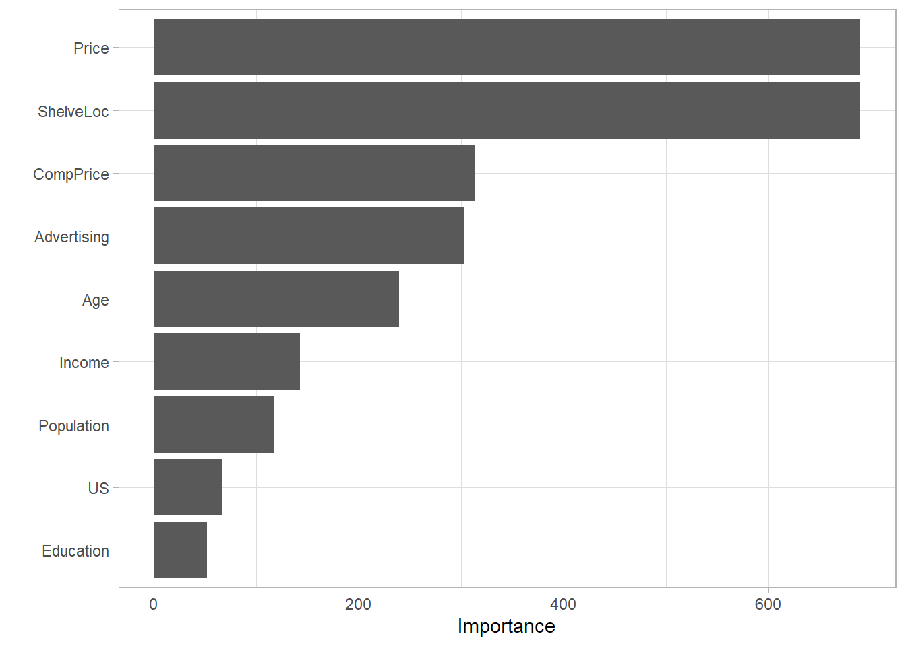
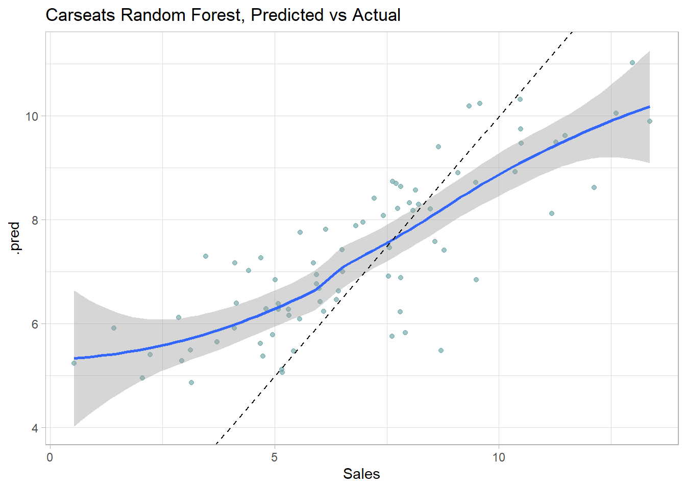
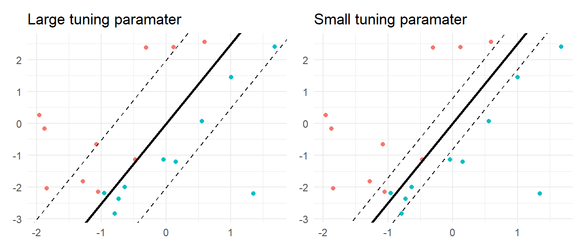

Chapter 4 Decision Trees
These notes rely on PSU STAT 508.
Decision trees, also known as classification and regression tree (CART) models, are tree-based methods for supervised machine learning. Simple classification trees and regression trees are easy to use and interpret, but are not competitive with the best machine learning methods. However, they form the foundation for ensemble models such as bagged trees, random forests, and boosted trees, which although less interpretable, are very accurate.
CART models segment the predictor space into \(K\) non-overlapping terminal nodes (leaves). Each node is described by a set of rules which can be used to predict new responses. The predicted value \(\hat{y}\) for each node is the mode (classification) or mean (regression).
CART models define the nodes through a top-down greedy process called recursive binary splitting. The process is top-down because it begins at the top of the tree with all observations in a single region and successively splits the predictor space. It is greedy because at each splitting step, the best split is made at that particular step without consideration to subsequent splits.
The best split is the predictor variable and cutpoint that minimizes a cost function. The most common cost function for regression trees is the sum of squared residuals,
\[RSS = \sum_{k=1}^K\sum_{i \in A_k}{\left(y_i - \hat{y}_{A_k} \right)^2}.\]
For classification trees, it is the Gini index,
\[G = \sum_{c=1}^C{\hat{p}_{kc}(1 - \hat{p}_{kc})},\]
and the entropy (aka information statistic)
\[D = - \sum_{c=1}^C{\hat{p}_{kc} \log \hat{p}_{kc}}\]
where \(\hat{p}_{kc}\) is the proportion of training observations in node \(k\) that are class \(c\). A completely pure node in a binary tree would have \(\hat{p} \in \{ 0, 1 \}\) and \(G = D = 0\). A completely impure node in a binary tree would have \(\hat{p} = 0.5\) and \(G = 0.5^2 \cdot 2 = 0.25\) and \(D = -(0.5 \log(0.5)) \cdot 2 = 0.69\).
CART repeats the splitting process for each child node until a stopping criterion is satisfied, usually when no node size surpasses a predefined maximum, or continued splitting does not improve the model significantly. CART may also impose a minimum number of observations in each node.
The resulting tree likely over-fits the training data and therefore does not generalize well to test data, so CART prunes the tree, minimizing the cross-validated prediction error. Rather than cross-validating every possible subtree to find the one with minimum error, CART uses cost-complexity pruning. Cost-complexity is the tradeoff between error (cost) and tree size (complexity) where the tradeoff is quantified with cost-complexity parameter \(c_p\). The cost complexity of the tree, \(R_{c_p}(T)\), is the sum of its risk (error) plus a “cost complexity” factor \(c_p\) multiple of the tree size \(|T|\).
\[R_{c_p}(T) = R(T) + c_p|T|\]
\(c_p\) can take on any value from \([0..\infty]\), but it turns out there is an optimal tree for ranges of \(c_p\) values, so there are only a finite set of interesting values for \(c_p\) (James et al. 2013) (Therneau and Atkinson 2019) (Kuhn and Johnson 2016). A parametric algorithm identifies the interesting \(c_p\) values and their associated pruned trees, \(T_{c_p}\). CART uses cross-validation to determine which \(c_p\) is optimal.
4.1 Classification Tree
You don’t usually build a simple classification tree on its own, but it is a good way to build understanding, and the ensemble models build on the logic. I’ll learn by example, using the ISLR::OJ data set to predict which brand of orange juice, Citrus Hill (CH) or Minute Maid = (MM), customers Purchase from its 17 predictor variables.
library(tidyverse)
library(caret)
library(rpart) # classification and regression trees
library(rpart.plot) # better formatted plots than the ones in rpart
oj_dat <- ISLR::OJ
skimr::skim(oj_dat)| Name | oj_dat |
| Number of rows | 1070 |
| Number of columns | 18 |
| _______________________ | |
| Column type frequency: | |
| factor | 2 |
| numeric | 16 |
| ________________________ | |
| Group variables | None |
Variable type: factor
| skim_variable | n_missing | complete_rate | ordered | n_unique | top_counts |
|---|---|---|---|---|---|
| Purchase | 0 | 1 | FALSE | 2 | CH: 653, MM: 417 |
| Store7 | 0 | 1 | FALSE | 2 | No: 714, Yes: 356 |
Variable type: numeric
| skim_variable | n_missing | complete_rate | mean | sd | p0 | p25 | p50 | p75 | p100 | hist |
|---|---|---|---|---|---|---|---|---|---|---|
| WeekofPurchase | 0 | 1 | 254.38 | 15.56 | 227.00 | 240.00 | 257.00 | 268.00 | 278.00 | ▆▅▅▇▇ |
| StoreID | 0 | 1 | 3.96 | 2.31 | 1.00 | 2.00 | 3.00 | 7.00 | 7.00 | ▇▅▃▁▇ |
| PriceCH | 0 | 1 | 1.87 | 0.10 | 1.69 | 1.79 | 1.86 | 1.99 | 2.09 | ▅▂▇▆▁ |
| PriceMM | 0 | 1 | 2.09 | 0.13 | 1.69 | 1.99 | 2.09 | 2.18 | 2.29 | ▂▁▃▇▆ |
| DiscCH | 0 | 1 | 0.05 | 0.12 | 0.00 | 0.00 | 0.00 | 0.00 | 0.50 | ▇▁▁▁▁ |
| DiscMM | 0 | 1 | 0.12 | 0.21 | 0.00 | 0.00 | 0.00 | 0.23 | 0.80 | ▇▁▂▁▁ |
| SpecialCH | 0 | 1 | 0.15 | 0.35 | 0.00 | 0.00 | 0.00 | 0.00 | 1.00 | ▇▁▁▁▂ |
| SpecialMM | 0 | 1 | 0.16 | 0.37 | 0.00 | 0.00 | 0.00 | 0.00 | 1.00 | ▇▁▁▁▂ |
| LoyalCH | 0 | 1 | 0.57 | 0.31 | 0.00 | 0.33 | 0.60 | 0.85 | 1.00 | ▅▃▆▆▇ |
| SalePriceMM | 0 | 1 | 1.96 | 0.25 | 1.19 | 1.69 | 2.09 | 2.13 | 2.29 | ▁▂▂▂▇ |
| SalePriceCH | 0 | 1 | 1.82 | 0.14 | 1.39 | 1.75 | 1.86 | 1.89 | 2.09 | ▂▁▇▇▅ |
| PriceDiff | 0 | 1 | 0.15 | 0.27 | -0.67 | 0.00 | 0.23 | 0.32 | 0.64 | ▁▂▃▇▂ |
| PctDiscMM | 0 | 1 | 0.06 | 0.10 | 0.00 | 0.00 | 0.00 | 0.11 | 0.40 | ▇▁▂▁▁ |
| PctDiscCH | 0 | 1 | 0.03 | 0.06 | 0.00 | 0.00 | 0.00 | 0.00 | 0.25 | ▇▁▁▁▁ |
| ListPriceDiff | 0 | 1 | 0.22 | 0.11 | 0.00 | 0.14 | 0.24 | 0.30 | 0.44 | ▂▃▆▇▁ |
| STORE | 0 | 1 | 1.63 | 1.43 | 0.00 | 0.00 | 2.00 | 3.00 | 4.00 | ▇▃▅▅▃ |
I’ll split oj_dat (n = 1,070) into oj_train (80%, n = 857) to fit various models, and oj_test (20%, n = 213) to compare their performance on new data.
set.seed(12345)
partition <- createDataPartition(y = oj_dat$Purchase, p = 0.8, list = FALSE)
oj_train <- oj_dat[partition, ]
oj_test <- oj_dat[-partition, ]Function rpart::rpart() builds a full tree, minimizing the Gini index \(G\) by default (parms = list(split = "gini")), until the stopping criterion is satisfied. The default stopping criterion is
- only attempt a split if the current node has at least
minsplit = 20observations, and - only accept a split if
- the resulting nodes have at least
minbucket = round(minsplit/3)observations, and - the resulting overall fit improves by
cp = 0.01(i.e., \(\Delta G <= 0.01\)).
- the resulting nodes have at least
# Use method = "class" for classification, method = "anova" for regression
set.seed(123)
oj_mdl_cart_full <- rpart(formula = Purchase ~ ., data = oj_train, method = "class")
print(oj_mdl_cart_full)## n= 857
##
## node), split, n, loss, yval, (yprob)
## * denotes terminal node
##
## 1) root 857 334 CH (0.61026838 0.38973162)
## 2) LoyalCH>=0.48285 537 94 CH (0.82495345 0.17504655)
## 4) LoyalCH>=0.7648795 271 13 CH (0.95202952 0.04797048) *
## 5) LoyalCH< 0.7648795 266 81 CH (0.69548872 0.30451128)
## 10) PriceDiff>=-0.165 226 50 CH (0.77876106 0.22123894) *
## 11) PriceDiff< -0.165 40 9 MM (0.22500000 0.77500000) *
## 3) LoyalCH< 0.48285 320 80 MM (0.25000000 0.75000000)
## 6) LoyalCH>=0.2761415 146 58 MM (0.39726027 0.60273973)
## 12) SalePriceMM>=2.04 71 31 CH (0.56338028 0.43661972) *
## 13) SalePriceMM< 2.04 75 18 MM (0.24000000 0.76000000) *
## 7) LoyalCH< 0.2761415 174 22 MM (0.12643678 0.87356322) *The output starts with the root node. The predicted class at the root is CH and this prediction produces 334 errors on the 857 observations for a success rate (accuracy) of 61% (0.61026838) and an error rate of 39% (0.38973162). The child nodes of node “x” are labeled 2x) and 2x+1), so the child nodes of 1) are 2) and 3), and the child nodes of 2) are 4) and 5). Terminal nodes are labeled with an asterisk (*).
Surprisingly, only 3 of the 17 features were used the in full tree: LoyalCH (Customer brand loyalty for CH), PriceDiff (relative price of MM over CH), and SalePriceMM (absolute price of MM). The first split is at LoyalCH = 0.48285. Here is a diagram of the full (unpruned) tree.

The boxes show the node classification (based on mode), the proportion of observations that are not CH, and the proportion of observations included in the node.
rpart() not only grew the full tree, it identified the set of cost complexity parameters, and measured the model performance of each corresponding tree using cross-validation. printcp() displays the candidate \(c_p\) values. You can use this table to decide how to prune the tree.
##
## Classification tree:
## rpart(formula = Purchase ~ ., data = oj_train, method = "class")
##
## Variables actually used in tree construction:
## [1] LoyalCH PriceDiff SalePriceMM
##
## Root node error: 334/857 = 0.38973
##
## n= 857
##
## CP nsplit rel error xerror xstd
## 1 0.479042 0 1.00000 1.00000 0.042745
## 2 0.032934 1 0.52096 0.54192 0.035775
## 3 0.013473 3 0.45509 0.47006 0.033905
## 4 0.010000 5 0.42814 0.46407 0.033736There are 4 \(c_p\) values in this model. The model with the smallest complexity parameter allows the most splits (nsplit). The highest complexity parameter corresponds to a tree with just a root node. rel error is the error rate relative to the root node. The root node absolute error is 0.38973162 (the proportion of MM), so its rel error is 0.38973162/0.38973162 = 1.0. That means the absolute error of the full tree (at CP = 0.01) is 0.42814 * 0.38973162 = 0.1669. You can verify that by calculating the error rate of the predicted values:
data.frame(pred = predict(oj_mdl_cart_full, newdata = oj_train, type = "class")) %>%
mutate(obs = oj_train$Purchase,
err = if_else(pred != obs, 1, 0)) %>%
summarize(mean_err = mean(err))## mean_err
## 1 0.1668611Finishing the CP table tour, xerror is the relative cross-validated error rate and xstd is its standard error. If you want the lowest possible error, then prune to the tree with the smallest relative CV error, \(c_p\) = 0.01. If you want to balance predictive power with simplicity, prune to the smallest tree within 1 SE of the one with the smallest relative error. The CP table is not super-helpful for finding that tree, so add a column to find it.
oj_mdl_cart_full$cptable %>%
data.frame() %>%
mutate(
min_idx = which.min(oj_mdl_cart_full$cptable[, "xerror"]),
rownum = row_number(),
xerror_cap = oj_mdl_cart_full$cptable[min_idx, "xerror"] +
oj_mdl_cart_full$cptable[min_idx, "xstd"],
eval = case_when(rownum == min_idx ~ "min xerror",
xerror < xerror_cap ~ "under cap",
TRUE ~ "")
) %>%
select(-rownum, -min_idx) ## CP nsplit rel.error xerror xstd xerror_cap eval
## 1 0.47904192 0 1.0000000 1.0000000 0.04274518 0.4978082
## 2 0.03293413 1 0.5209581 0.5419162 0.03577468 0.4978082
## 3 0.01347305 3 0.4550898 0.4700599 0.03390486 0.4978082 under cap
## 4 0.01000000 5 0.4281437 0.4640719 0.03373631 0.4978082 min xerrorThe simplest tree using the 1-SE rule is $c_p = 0.01347305, CV error = 0.1832). Fortunately, plotcp() presents a nice graphical representation of the relationship between xerror and cp.

The dashed line is set at the minimum xerror + xstd. The top axis shows the number of splits in the tree. I’m not sure why the CP values are not the same as in the table (they are close, but not the same). The figure suggests I should prune to 5 or 3 splits. I see this curve never really hits a minimum - it is still decreasing at 5 splits. The default tuning parameter value cp = 0.01 may be too large, so I’ll set it to cp = 0.001 and start over.
set.seed(123)
oj_mdl_cart_full <- rpart(
formula = Purchase ~ .,
data = oj_train,
method = "class",
cp = 0.001
)
print(oj_mdl_cart_full)## n= 857
##
## node), split, n, loss, yval, (yprob)
## * denotes terminal node
##
## 1) root 857 334 CH (0.61026838 0.38973162)
## 2) LoyalCH>=0.48285 537 94 CH (0.82495345 0.17504655)
## 4) LoyalCH>=0.7648795 271 13 CH (0.95202952 0.04797048) *
## 5) LoyalCH< 0.7648795 266 81 CH (0.69548872 0.30451128)
## 10) PriceDiff>=-0.165 226 50 CH (0.77876106 0.22123894)
## 20) ListPriceDiff>=0.255 115 11 CH (0.90434783 0.09565217) *
## 21) ListPriceDiff< 0.255 111 39 CH (0.64864865 0.35135135)
## 42) PriceMM>=2.155 19 2 CH (0.89473684 0.10526316) *
## 43) PriceMM< 2.155 92 37 CH (0.59782609 0.40217391)
## 86) DiscCH>=0.115 7 0 CH (1.00000000 0.00000000) *
## 87) DiscCH< 0.115 85 37 CH (0.56470588 0.43529412)
## 174) ListPriceDiff>=0.215 45 15 CH (0.66666667 0.33333333) *
## 175) ListPriceDiff< 0.215 40 18 MM (0.45000000 0.55000000)
## 350) LoyalCH>=0.527571 28 13 CH (0.53571429 0.46428571)
## 700) WeekofPurchase< 266.5 21 8 CH (0.61904762 0.38095238) *
## 701) WeekofPurchase>=266.5 7 2 MM (0.28571429 0.71428571) *
## 351) LoyalCH< 0.527571 12 3 MM (0.25000000 0.75000000) *
## 11) PriceDiff< -0.165 40 9 MM (0.22500000 0.77500000) *
## 3) LoyalCH< 0.48285 320 80 MM (0.25000000 0.75000000)
## 6) LoyalCH>=0.2761415 146 58 MM (0.39726027 0.60273973)
## 12) SalePriceMM>=2.04 71 31 CH (0.56338028 0.43661972)
## 24) LoyalCH< 0.303104 7 0 CH (1.00000000 0.00000000) *
## 25) LoyalCH>=0.303104 64 31 CH (0.51562500 0.48437500)
## 50) WeekofPurchase>=246.5 52 22 CH (0.57692308 0.42307692)
## 100) PriceCH< 1.94 35 11 CH (0.68571429 0.31428571)
## 200) StoreID< 1.5 9 1 CH (0.88888889 0.11111111) *
## 201) StoreID>=1.5 26 10 CH (0.61538462 0.38461538)
## 402) LoyalCH< 0.410969 17 4 CH (0.76470588 0.23529412) *
## 403) LoyalCH>=0.410969 9 3 MM (0.33333333 0.66666667) *
## 101) PriceCH>=1.94 17 6 MM (0.35294118 0.64705882) *
## 51) WeekofPurchase< 246.5 12 3 MM (0.25000000 0.75000000) *
## 13) SalePriceMM< 2.04 75 18 MM (0.24000000 0.76000000)
## 26) SpecialCH>=0.5 14 6 CH (0.57142857 0.42857143) *
## 27) SpecialCH< 0.5 61 10 MM (0.16393443 0.83606557) *
## 7) LoyalCH< 0.2761415 174 22 MM (0.12643678 0.87356322)
## 14) LoyalCH>=0.035047 117 21 MM (0.17948718 0.82051282)
## 28) WeekofPurchase< 273.5 104 21 MM (0.20192308 0.79807692)
## 56) PriceCH>=1.875 20 9 MM (0.45000000 0.55000000)
## 112) WeekofPurchase>=252.5 12 5 CH (0.58333333 0.41666667) *
## 113) WeekofPurchase< 252.5 8 2 MM (0.25000000 0.75000000) *
## 57) PriceCH< 1.875 84 12 MM (0.14285714 0.85714286) *
## 29) WeekofPurchase>=273.5 13 0 MM (0.00000000 1.00000000) *
## 15) LoyalCH< 0.035047 57 1 MM (0.01754386 0.98245614) *This is a much larger tree. Did I find a cp value that produces a local min?

Yes, the min is at CP = 0.011 with 5 splits. The min + 1 SE is at CP = 0.021 with 3 splits. I’ll prune the tree to 3 splits.
oj_mdl_cart <- prune(
oj_mdl_cart_full,
cp = oj_mdl_cart_full$cptable[oj_mdl_cart_full$cptable[, 2] == 3, "CP"]
)
rpart.plot(oj_mdl_cart, yesno = TRUE)
The most “important” indicator of Purchase appears to be LoyalCH. From the rpart vignette (page 12),
“An overall measure of variable importance is the sum of the goodness of split measures for each split for which it was the primary variable, plus goodness (adjusted agreement) for all splits in which it was a surrogate.”
Surrogates refer to alternative features for a node to handle missing data. For each split, CART evaluates a variety of alternative “surrogate” splits to use when the feature value for the primary split is NA. Surrogate splits are splits that produce results similar to the original split.
A variable’s importance is the sum of the improvement in the overall Gini (or RMSE) measure produced by the nodes in which it appears. Here is the variable importance for this model.
oj_mdl_cart$variable.importance %>%
data.frame() %>%
rownames_to_column(var = "Feature") %>%
rename(Overall = '.') %>%
ggplot(aes(x = fct_reorder(Feature, Overall), y = Overall)) +
geom_pointrange(aes(ymin = 0, ymax = Overall), color = "cadetblue", size = .3) +
theme_minimal() +
coord_flip() +
labs(x = "", y = "", title = "Variable Importance with Simple Classication")
LoyalCH is by far the most important variable, as expected from its position at the top of the tree, and one level down.
You can see how the surrogates appear in the model with the summary() function.
## Call:
## rpart(formula = Purchase ~ ., data = oj_train, method = "class",
## cp = 0.001)
## n= 857
##
## CP nsplit rel error xerror xstd
## 1 0.47904192 0 1.0000000 1.0000000 0.04274518
## 2 0.03293413 1 0.5209581 0.5419162 0.03577468
## 3 0.01347305 3 0.4550898 0.4700599 0.03390486
##
## Variable importance
## LoyalCH PriceDiff SalePriceMM StoreID WeekofPurchase
## 67 9 5 4 4
## DiscMM PriceMM PctDiscMM PriceCH
## 3 3 3 1
##
## Node number 1: 857 observations, complexity param=0.4790419
## predicted class=CH expected loss=0.3897316 P(node) =1
## class counts: 523 334
## probabilities: 0.610 0.390
## left son=2 (537 obs) right son=3 (320 obs)
## Primary splits:
## LoyalCH < 0.48285 to the right, improve=132.56800, (0 missing)
## StoreID < 3.5 to the right, improve= 40.12097, (0 missing)
## PriceDiff < 0.015 to the right, improve= 24.26552, (0 missing)
## ListPriceDiff < 0.255 to the right, improve= 22.79117, (0 missing)
## SalePriceMM < 1.84 to the right, improve= 20.16447, (0 missing)
## Surrogate splits:
## StoreID < 3.5 to the right, agree=0.646, adj=0.053, (0 split)
## PriceMM < 1.89 to the right, agree=0.638, adj=0.031, (0 split)
## WeekofPurchase < 229.5 to the right, agree=0.632, adj=0.016, (0 split)
## DiscMM < 0.77 to the left, agree=0.629, adj=0.006, (0 split)
## SalePriceMM < 1.385 to the right, agree=0.629, adj=0.006, (0 split)
##
## Node number 2: 537 observations, complexity param=0.03293413
## predicted class=CH expected loss=0.1750466 P(node) =0.6266044
## class counts: 443 94
## probabilities: 0.825 0.175
## left son=4 (271 obs) right son=5 (266 obs)
## Primary splits:
## LoyalCH < 0.7648795 to the right, improve=17.669310, (0 missing)
## PriceDiff < 0.015 to the right, improve=15.475200, (0 missing)
## SalePriceMM < 1.84 to the right, improve=13.951730, (0 missing)
## ListPriceDiff < 0.255 to the right, improve=11.407560, (0 missing)
## DiscMM < 0.15 to the left, improve= 7.795122, (0 missing)
## Surrogate splits:
## WeekofPurchase < 257.5 to the right, agree=0.594, adj=0.180, (0 split)
## PriceCH < 1.775 to the right, agree=0.590, adj=0.173, (0 split)
## StoreID < 3.5 to the right, agree=0.587, adj=0.165, (0 split)
## PriceMM < 2.04 to the right, agree=0.587, adj=0.165, (0 split)
## SalePriceMM < 2.04 to the right, agree=0.587, adj=0.165, (0 split)
##
## Node number 3: 320 observations
## predicted class=MM expected loss=0.25 P(node) =0.3733956
## class counts: 80 240
## probabilities: 0.250 0.750
##
## Node number 4: 271 observations
## predicted class=CH expected loss=0.04797048 P(node) =0.3162194
## class counts: 258 13
## probabilities: 0.952 0.048
##
## Node number 5: 266 observations, complexity param=0.03293413
## predicted class=CH expected loss=0.3045113 P(node) =0.3103851
## class counts: 185 81
## probabilities: 0.695 0.305
## left son=10 (226 obs) right son=11 (40 obs)
## Primary splits:
## PriceDiff < -0.165 to the right, improve=20.84307, (0 missing)
## ListPriceDiff < 0.235 to the right, improve=20.82404, (0 missing)
## SalePriceMM < 1.84 to the right, improve=16.80587, (0 missing)
## DiscMM < 0.15 to the left, improve=10.05120, (0 missing)
## PctDiscMM < 0.0729725 to the left, improve=10.05120, (0 missing)
## Surrogate splits:
## SalePriceMM < 1.585 to the right, agree=0.906, adj=0.375, (0 split)
## DiscMM < 0.57 to the left, agree=0.895, adj=0.300, (0 split)
## PctDiscMM < 0.264375 to the left, agree=0.895, adj=0.300, (0 split)
## WeekofPurchase < 274.5 to the left, agree=0.872, adj=0.150, (0 split)
## SalePriceCH < 2.075 to the left, agree=0.857, adj=0.050, (0 split)
##
## Node number 10: 226 observations
## predicted class=CH expected loss=0.2212389 P(node) =0.2637106
## class counts: 176 50
## probabilities: 0.779 0.221
##
## Node number 11: 40 observations
## predicted class=MM expected loss=0.225 P(node) =0.04667445
## class counts: 9 31
## probabilities: 0.225 0.775I’ll evaluate the predictions and record the accuracy (correct classification percentage) for comparison to other models. Two ways to evaluate the model are the confusion matrix, and the ROC curve.
4.1.1 Measuring Performance
4.1.1.1 Confusion Matrix
Print the confusion matrix with caret::confusionMatrix() to see how well does this model performs against the holdout set.
oj_preds_cart <- bind_cols(
predict(oj_mdl_cart, newdata = oj_test, type = "prob"),
predicted = predict(oj_mdl_cart, newdata = oj_test, type = "class"),
actual = oj_test$Purchase
)
oj_cm_cart <- confusionMatrix(oj_preds_cart$predicted, reference = oj_preds_cart$actual)
oj_cm_cart## Confusion Matrix and Statistics
##
## Reference
## Prediction CH MM
## CH 113 13
## MM 17 70
##
## Accuracy : 0.8592
## 95% CI : (0.8051, 0.9029)
## No Information Rate : 0.6103
## P-Value [Acc > NIR] : 1.265e-15
##
## Kappa : 0.7064
##
## Mcnemar's Test P-Value : 0.5839
##
## Sensitivity : 0.8692
## Specificity : 0.8434
## Pos Pred Value : 0.8968
## Neg Pred Value : 0.8046
## Prevalence : 0.6103
## Detection Rate : 0.5305
## Detection Prevalence : 0.5915
## Balanced Accuracy : 0.8563
##
## 'Positive' Class : CH
## The confusion matrix is at the top. It also includes a lot of statistics. It’s worth getting familiar with the stats. The model accuracy and 95% CI are calculated from the binomial test.
##
## Exact binomial test
##
## data: 113 + 70 and 213
## number of successes = 183, number of trials = 213, p-value < 2.2e-16
## alternative hypothesis: true probability of success is not equal to 0.5
## 95 percent confidence interval:
## 0.8050785 0.9029123
## sample estimates:
## probability of success
## 0.8591549The “No Information Rate” (NIR) statistic is the class rate for the largest class. In this case CH is the largest class, so NIR = 130/213 = 0.6103. “P-Value [Acc > NIR]” is the binomial test that the model accuracy is significantly better than the NIR (i.e., significantly better than just always guessing CH).
##
## Exact binomial test
##
## data: 113 + 70 and 213
## number of successes = 183, number of trials = 213, p-value = 1.265e-15
## alternative hypothesis: true probability of success is greater than 0.6103286
## 95 percent confidence interval:
## 0.8138446 1.0000000
## sample estimates:
## probability of success
## 0.8591549The “Accuracy” statistic indicates the model predicts 0.8590 of the observations correctly. That’s good, but less impressive when you consider the prevalence of CH is 0.6103 - you could achieve 61% accuracy just by predicting CH every time. A measure that controls for the prevalence is Cohen’s kappa statistic. The kappa statistic is explained here. It compares the accuracy to the accuracy of a “random system”. It is defined as
\[\kappa = \frac{Acc - RA}{1-RA}\]
where
\[RA = \frac{ActFalse \times PredFalse + ActTrue \times PredTrue}{Total \times Total}\]
is the hypothetical probability of a chance agreement. ActFalse will be the number of “MM” (13 + 70 = 83) and actual true will be the number of “CH” (113 + 17 = 130). The predicted counts are
##
## CH MM
## 126 87So, \(RA = (83*87 + 130*126) / 213^2 = 0.5202\) and \(\kappa = (0.8592 - 0.5202)/(1 - 0.5202) = 0.7064\). The kappa statistic varies from 0 to 1 where 0 means accurate predictions occur merely by chance, and 1 means the predictions are in perfect agreement with the observations. In this case, a kappa statistic of 0.7064 is “substantial”. See chart here.
The other measures from the confusionMatrix() output are various proportions and you can remind yourself of their definitions in the documentation with ?confusionMatrix.
Visuals are almost always helpful. Here is a plot of the confusion matrix.
plot(oj_preds_cart$actual, oj_preds_cart$predicted,
main = "Simple Classification: Predicted vs. Actual",
xlab = "Actual",
ylab = "Predicted")
4.1.1.2 ROC Curve
The ROC (receiver operating characteristics) curve (Fawcett 2005) is another measure of accuracy. The ROC curve is a plot of the true positive rate (TPR, sensitivity) versus the false positive rate (FPR, 1 - specificity) for a set of thresholds. By default, the threshold for predicting the default classification is 0.50, but it could be any threshold. precrec::evalmod() calculates the confusion matrix values from the model using the holdout data set. The AUC on the holdout set is 0.8848. pRoc::plot.roc(), plotROC::geom_roc(), and yardstick::roc_curve() are all options for plotting a ROC curve.
mdl_auc <- Metrics::auc(actual = oj_preds_cart$actual == "CH", oj_preds_cart$CH)
yardstick::roc_curve(oj_preds_cart, actual, CH) %>%
autoplot() +
labs(
title = "OJ CART ROC Curve",
subtitle = paste0("AUC = ", round(mdl_auc, 4))
)
A few points on the ROC space are helpful for understanding how to use it.
- The lower left point (0, 0) is the result of always predicting “negative” or in this case “MM” if “CH” is taken as the default class. No false positives, but no true positives either.
- The upper right point (1, 1) is the result of always predicting “positive” (“CH” here). You catch all true positives, but miss all the true negatives.
- The upper left point (0, 1) is the result of perfect accuracy.
- The lower right point (1, 0) is the result of perfect imbecility. You made the exact wrong prediction every time.
- The 45 degree diagonal is the result of randomly guessing positive (CH) X percent of the time. If you guess positive 90% of the time and the prevalence is 50%, your TPR will be 90% and your FPR will also be 90%, etc.
The goal is for all nodes to bunch up in the upper left.
Points to the left of the diagonal with a low TPR can be thought of as “conservative” predictors - they only make positive (CH) predictions with strong evidence. Points to the left of the diagonal with a high TPR can be thought of as “liberal” predictors - they make positive (CH) predictions with weak evidence.
4.1.1.3 Gain Curve
The gain curve plots the cumulative summed true outcome versus the fraction of items seen when sorted by the predicted value. The “wizard” curve is the gain curve when the data is sorted by the true outcome. If the model’s gain curve is close to the wizard curve, then the model predicted the response variable well. The gray area is the “gain” over a random prediction.
130 of the 213 consumers in the holdout set purchased CH.
The gain curve encountered 77 CH purchasers (59%) within the first 79 observations (37%).
It encountered all 130 CH purchasers on the 213th observation (100%).
The bottom of the gray area is the outcome of a random model. Only half the CH purchasers would be observed within 50% of the observations. The top of the gray area is the outcome of the perfect model, the “wizard curve”. Half the CH purchasers would be observed in 65/213=31% of the observations.
yardstick::gain_curve(oj_preds_cart, actual, CH) %>%
autoplot() +
labs(
title = "OJ CART Gain Curve"
)
4.1.2 Training with Caret
I can also fit the model with caret::train(). There are two ways to tune hyperparameters in train():
- set the number of tuning parameter values to consider by setting
tuneLength, or - set particular values to consider for each parameter by defining a
tuneGrid.
I’ll build the model using 10-fold cross-validation to optimize the hyperparameter CP. If you have no idea what is the optimal tuning parameter, start with tuneLength to get close, then fine-tune with tuneGrid. That’s what I’ll do. I’ll create a training control object that I can re-use in other model builds.
oj_trControl = trainControl(
method = "cv",
number = 10,
savePredictions = "final", # save preds for the optimal tuning parameter
classProbs = TRUE, # class probs in addition to preds
summaryFunction = twoClassSummary
)Now fit the model.
set.seed(1234)
oj_mdl_cart2 <- train(
Purchase ~ .,
data = oj_train,
method = "rpart",
tuneLength = 5,
metric = "ROC",
trControl = oj_trControl
)caret built a full tree using rpart’s default parameters: gini splitting index, at least 20 observations in a node in order to consider splitting it, and at least 6 observations in each node. Caret then calculated the accuracy for each candidate value of \(\alpha\). Here is the results.
## CART
##
## 857 samples
## 17 predictor
## 2 classes: 'CH', 'MM'
##
## No pre-processing
## Resampling: Cross-Validated (10 fold)
## Summary of sample sizes: 772, 772, 771, 770, 771, 771, ...
## Resampling results across tuning parameters:
##
## cp ROC Sens Spec
## 0.005988024 0.8539885 0.8605225 0.7274510
## 0.008982036 0.8502309 0.8568578 0.7334225
## 0.013473054 0.8459290 0.8473149 0.7397504
## 0.032934132 0.7776483 0.8509071 0.6796791
## 0.479041916 0.5878764 0.9201379 0.2556150
##
## ROC was used to select the optimal model using the largest value.
## The final value used for the model was cp = 0.005988024.The second cp (0.008982036) produced the highest accuracy. I can drill into the best value of cp using a tuning grid.
set.seed(1234)
oj_mdl_cart2 <- train(
Purchase ~ .,
data = oj_train,
method = "rpart",
tuneGrid = expand.grid(cp = seq(from = 0.001, to = 0.010, length = 11)),
metric = "ROC",
trControl = oj_trControl
)
print(oj_mdl_cart2)## CART
##
## 857 samples
## 17 predictor
## 2 classes: 'CH', 'MM'
##
## No pre-processing
## Resampling: Cross-Validated (10 fold)
## Summary of sample sizes: 772, 772, 771, 770, 771, 771, ...
## Resampling results across tuning parameters:
##
## cp ROC Sens Spec
## 0.0010 0.8513056 0.8529390 0.7182709
## 0.0019 0.8528471 0.8529753 0.7213012
## 0.0028 0.8524435 0.8510522 0.7302139
## 0.0037 0.8533529 0.8510522 0.7421569
## 0.0046 0.8540042 0.8491292 0.7333333
## 0.0055 0.8543820 0.8567126 0.7334225
## 0.0064 0.8539885 0.8605225 0.7274510
## 0.0073 0.8521076 0.8625181 0.7335116
## 0.0082 0.8521076 0.8625181 0.7335116
## 0.0091 0.8502309 0.8568578 0.7334225
## 0.0100 0.8507262 0.8510885 0.7424242
##
## ROC was used to select the optimal model using the largest value.
## The final value used for the model was cp = 0.0055.The best model is at cp = 0.0082. Here are the cross-validated accuracies for the candidate cp values.

Here are the rules in the final model.
## n= 857
##
## node), split, n, loss, yval, (yprob)
## * denotes terminal node
##
## 1) root 857 334 CH (0.61026838 0.38973162)
## 2) LoyalCH>=0.48285 537 94 CH (0.82495345 0.17504655)
## 4) LoyalCH>=0.7648795 271 13 CH (0.95202952 0.04797048) *
## 5) LoyalCH< 0.7648795 266 81 CH (0.69548872 0.30451128)
## 10) PriceDiff>=-0.165 226 50 CH (0.77876106 0.22123894) *
## 11) PriceDiff< -0.165 40 9 MM (0.22500000 0.77500000) *
## 3) LoyalCH< 0.48285 320 80 MM (0.25000000 0.75000000)
## 6) LoyalCH>=0.2761415 146 58 MM (0.39726027 0.60273973)
## 12) SalePriceMM>=2.04 71 31 CH (0.56338028 0.43661972)
## 24) LoyalCH< 0.303104 7 0 CH (1.00000000 0.00000000) *
## 25) LoyalCH>=0.303104 64 31 CH (0.51562500 0.48437500)
## 50) WeekofPurchase>=246.5 52 22 CH (0.57692308 0.42307692)
## 100) PriceCH< 1.94 35 11 CH (0.68571429 0.31428571) *
## 101) PriceCH>=1.94 17 6 MM (0.35294118 0.64705882) *
## 51) WeekofPurchase< 246.5 12 3 MM (0.25000000 0.75000000) *
## 13) SalePriceMM< 2.04 75 18 MM (0.24000000 0.76000000)
## 26) SpecialCH>=0.5 14 6 CH (0.57142857 0.42857143) *
## 27) SpecialCH< 0.5 61 10 MM (0.16393443 0.83606557) *
## 7) LoyalCH< 0.2761415 174 22 MM (0.12643678 0.87356322) *
Let’s look at the performance on the holdout data set.
oj_preds_cart2 <- bind_cols(
predict(oj_mdl_cart2, newdata = oj_test, type = "prob"),
Predicted = predict(oj_mdl_cart2, newdata = oj_test, type = "raw"),
Actual = oj_test$Purchase
)
oj_cm_cart2 <- confusionMatrix(oj_preds_cart2$Predicted, oj_preds_cart2$Actual)
oj_cm_cart2## Confusion Matrix and Statistics
##
## Reference
## Prediction CH MM
## CH 117 18
## MM 13 65
##
## Accuracy : 0.8545
## 95% CI : (0.7998, 0.8989)
## No Information Rate : 0.6103
## P-Value [Acc > NIR] : 4.83e-15
##
## Kappa : 0.6907
##
## Mcnemar's Test P-Value : 0.4725
##
## Sensitivity : 0.9000
## Specificity : 0.7831
## Pos Pred Value : 0.8667
## Neg Pred Value : 0.8333
## Prevalence : 0.6103
## Detection Rate : 0.5493
## Detection Prevalence : 0.6338
## Balanced Accuracy : 0.8416
##
## 'Positive' Class : CH
## The accuracy is 0.8451 - a little worse than the 0.8592 from the direct method. The AUC is 0.9102.
mdl_auc <- Metrics::auc(actual = oj_preds_cart2$Actual == "CH", oj_preds_cart2$CH)
yardstick::roc_curve(oj_preds_cart2, Actual, CH) %>%
autoplot() +
labs(
title = "OJ CART ROC Curve (caret)",
subtitle = paste0("AUC = ", round(mdl_auc, 4))
)
yardstick::gain_curve(oj_preds_cart2, Actual, CH) %>%
autoplot() +
labs(title = "OJ CART Gain Curve (caret)")
Finally, here is the variable importance plot. Brand loyalty is most important, followed by price difference.

Looks like the manual effort fared best. Here is a summary the accuracy rates of the two models.
oj_scoreboard <- rbind(
data.frame(Model = "Single Tree", Accuracy = oj_cm_cart$overall["Accuracy"]),
data.frame(Model = "Single Tree (caret)", Accuracy = oj_cm_cart2$overall["Accuracy"])
) %>% arrange(desc(Accuracy))
scoreboard(oj_scoreboard)Model | Accuracy |
|---|---|
Single Tree | 0.8591549 |
Single Tree (caret) | 0.8544601 |
4.2 Regression Tree
A simple regression tree is built in a manner similar to a simple classification tree, and like the simple classification tree, it is rarely invoked on its own; the bagged, random forest, and gradient boosting methods build on this logic. I’ll learn by example again. Using the ISLR::Carseats data set, and predict Sales using from the 10 feature variables.
| Name | cs_dat |
| Number of rows | 400 |
| Number of columns | 11 |
| _______________________ | |
| Column type frequency: | |
| factor | 3 |
| numeric | 8 |
| ________________________ | |
| Group variables | None |
Variable type: factor
| skim_variable | n_missing | complete_rate | ordered | n_unique | top_counts |
|---|---|---|---|---|---|
| ShelveLoc | 0 | 1 | FALSE | 3 | Med: 219, Bad: 96, Goo: 85 |
| Urban | 0 | 1 | FALSE | 2 | Yes: 282, No: 118 |
| US | 0 | 1 | FALSE | 2 | Yes: 258, No: 142 |
Variable type: numeric
| skim_variable | n_missing | complete_rate | mean | sd | p0 | p25 | p50 | p75 | p100 | hist |
|---|---|---|---|---|---|---|---|---|---|---|
| Sales | 0 | 1 | 7.50 | 2.82 | 0 | 5.39 | 7.49 | 9.32 | 16.27 | ▁▆▇▃▁ |
| CompPrice | 0 | 1 | 124.97 | 15.33 | 77 | 115.00 | 125.00 | 135.00 | 175.00 | ▁▅▇▃▁ |
| Income | 0 | 1 | 68.66 | 27.99 | 21 | 42.75 | 69.00 | 91.00 | 120.00 | ▇▆▇▆▅ |
| Advertising | 0 | 1 | 6.64 | 6.65 | 0 | 0.00 | 5.00 | 12.00 | 29.00 | ▇▃▃▁▁ |
| Population | 0 | 1 | 264.84 | 147.38 | 10 | 139.00 | 272.00 | 398.50 | 509.00 | ▇▇▇▇▇ |
| Price | 0 | 1 | 115.80 | 23.68 | 24 | 100.00 | 117.00 | 131.00 | 191.00 | ▁▂▇▆▁ |
| Age | 0 | 1 | 53.32 | 16.20 | 25 | 39.75 | 54.50 | 66.00 | 80.00 | ▇▆▇▇▇ |
| Education | 0 | 1 | 13.90 | 2.62 | 10 | 12.00 | 14.00 | 16.00 | 18.00 | ▇▇▃▇▇ |
Split careseats_dat (n = 400) into cs_train (80%, n = 321) and cs_test (20%, n = 79).
set.seed(12345)
partition <- createDataPartition(y = cs_dat$Sales, p = 0.8, list = FALSE)
cs_train <- cs_dat[partition, ]
cs_test <- cs_dat[-partition, ]The first step is to build a full tree, then perform k-fold cross-validation to help select the optimal cost complexity (cp). The only difference here is the rpart() parameter method = "anova" to produce a regression tree.
set.seed(1234)
cs_mdl_cart_full <- rpart(Sales ~ ., cs_train, method = "anova")
print(cs_mdl_cart_full)## n= 321
##
## node), split, n, deviance, yval
## * denotes terminal node
##
## 1) root 321 2567.76800 7.535950
## 2) ShelveLoc=Bad,Medium 251 1474.14100 6.770359
## 4) Price>=105.5 168 719.70630 5.987024
## 8) ShelveLoc=Bad 50 165.70160 4.693600
## 16) Population< 201.5 20 48.35505 3.646500 *
## 17) Population>=201.5 30 80.79922 5.391667 *
## 9) ShelveLoc=Medium 118 434.91370 6.535085
## 18) Advertising< 11.5 88 290.05490 6.113068
## 36) CompPrice< 142 69 193.86340 5.769420
## 72) Price>=132.5 16 50.75440 4.455000 *
## 73) Price< 132.5 53 107.12060 6.166226 *
## 37) CompPrice>=142 19 58.45118 7.361053 *
## 19) Advertising>=11.5 30 83.21323 7.773000 *
## 5) Price< 105.5 83 442.68920 8.355904
## 10) Age>=63.5 32 153.42300 6.922500
## 20) Price>=85 25 66.89398 6.160800
## 40) ShelveLoc=Bad 9 18.39396 4.772222 *
## 41) ShelveLoc=Medium 16 21.38544 6.941875 *
## 21) Price< 85 7 20.22194 9.642857 *
## 11) Age< 63.5 51 182.26350 9.255294
## 22) Income< 57.5 12 28.03042 7.707500 *
## 23) Income>=57.5 39 116.63950 9.731538
## 46) Age>=50.5 14 21.32597 8.451429 *
## 47) Age< 50.5 25 59.52474 10.448400 *
## 3) ShelveLoc=Good 70 418.98290 10.281140
## 6) Price>=107.5 49 242.58730 9.441633
## 12) Advertising< 13.5 41 162.47820 8.926098
## 24) Age>=61 17 53.37051 7.757647 *
## 25) Age< 61 24 69.45776 9.753750 *
## 13) Advertising>=13.5 8 13.36599 12.083750 *
## 7) Price< 107.5 21 61.28200 12.240000 *The predicted Sales at the root is the mean Sales for the training data set, 7.535950 (values are $000s). The deviance at the root is the SSE, 2567.768. The first split is at ShelveLoc = [Bad, Medium] vs Good. Here is the unpruned tree diagram.

The boxes show the node predicted value (mean) and the proportion of observations that are in the node (or child nodes).
rpart() grew the full tree, and used cross-validation to test the performance of the possible complexity hyperparameters. printcp() displays the candidate cp values. You can use this table to decide how to prune the tree.
##
## Regression tree:
## rpart(formula = Sales ~ ., data = cs_train, method = "anova")
##
## Variables actually used in tree construction:
## [1] Advertising Age CompPrice Income Population Price
## [7] ShelveLoc
##
## Root node error: 2567.8/321 = 7.9993
##
## n= 321
##
## CP nsplit rel error xerror xstd
## 1 0.262736 0 1.00000 1.00635 0.076664
## 2 0.121407 1 0.73726 0.74888 0.058981
## 3 0.046379 2 0.61586 0.65278 0.050839
## 4 0.044830 3 0.56948 0.67245 0.051638
## 5 0.041671 4 0.52465 0.66230 0.051065
## 6 0.025993 5 0.48298 0.62345 0.049368
## 7 0.025823 6 0.45698 0.61980 0.048026
## 8 0.024007 7 0.43116 0.62058 0.048213
## 9 0.015441 8 0.40715 0.58061 0.041738
## 10 0.014698 9 0.39171 0.56413 0.041368
## 11 0.014641 10 0.37701 0.56277 0.041271
## 12 0.014233 11 0.36237 0.56081 0.041097
## 13 0.014015 12 0.34814 0.55647 0.038308
## 14 0.013938 13 0.33413 0.55647 0.038308
## 15 0.010560 14 0.32019 0.57110 0.038872
## 16 0.010000 15 0.30963 0.56676 0.038090There were 16 possible cp values in this model. The model with the smallest complexity parameter allows the most splits (nsplit). The highest complexity parameter corresponds to a tree with just a root node. rel error is the SSE relative to the root node. The root node SSE is 2567.76800, so its rel error is 2567.76800/2567.76800 = 1.0. That means the absolute error of the full tree (at CP = 0.01) is 0.30963 * 2567.76800 = 795.058. You can verify that by calculating the SSE of the model predicted values:
data.frame(pred = predict(cs_mdl_cart_full, newdata = cs_train)) %>%
mutate(obs = cs_train$Sales,
sq_err = (obs - pred)^2) %>%
summarize(sse = sum(sq_err))## sse
## 1 795.0525Finishing the CP table tour, xerror is the cross-validated SSE and xstd is its standard error. If you want the lowest possible error, then prune to the tree with the smallest relative SSE (xerror). If you want to balance predictive power with simplicity, prune to the smallest tree within 1 SE of the one with the smallest relative SSE. The CP table is not super-helpful for finding that tree. I’ll add a column to find it.
cs_mdl_cart_full$cptable %>%
data.frame() %>%
mutate(min_xerror_idx = which.min(cs_mdl_cart_full$cptable[, "xerror"]),
rownum = row_number(),
xerror_cap = cs_mdl_cart_full$cptable[min_xerror_idx, "xerror"] +
cs_mdl_cart_full$cptable[min_xerror_idx, "xstd"],
eval = case_when(rownum == min_xerror_idx ~ "min xerror",
xerror < xerror_cap ~ "under cap",
TRUE ~ "")) %>%
select(-rownum, -min_xerror_idx) ## CP nsplit rel.error xerror xstd xerror_cap eval
## 1 0.26273578 0 1.0000000 1.0063530 0.07666355 0.5947744
## 2 0.12140705 1 0.7372642 0.7488767 0.05898146 0.5947744
## 3 0.04637919 2 0.6158572 0.6527823 0.05083938 0.5947744
## 4 0.04483023 3 0.5694780 0.6724529 0.05163819 0.5947744
## 5 0.04167149 4 0.5246478 0.6623028 0.05106530 0.5947744
## 6 0.02599265 5 0.4829763 0.6234457 0.04936799 0.5947744
## 7 0.02582284 6 0.4569836 0.6198034 0.04802643 0.5947744
## 8 0.02400748 7 0.4311608 0.6205756 0.04821332 0.5947744
## 9 0.01544139 8 0.4071533 0.5806072 0.04173785 0.5947744 under cap
## 10 0.01469771 9 0.3917119 0.5641331 0.04136793 0.5947744 under cap
## 11 0.01464055 10 0.3770142 0.5627713 0.04127139 0.5947744 under cap
## 12 0.01423309 11 0.3623736 0.5608073 0.04109662 0.5947744 under cap
## 13 0.01401541 12 0.3481405 0.5564663 0.03830810 0.5947744 min xerror
## 14 0.01393771 13 0.3341251 0.5564663 0.03830810 0.5947744 under cap
## 15 0.01055959 14 0.3201874 0.5710951 0.03887227 0.5947744 under cap
## 16 0.01000000 15 0.3096278 0.5667561 0.03808991 0.5947744 under capOkay, so the simplest tree is the one with CP = 0.02599265 (5 splits). Fortunately, plotcp() presents a nice graphical representation of the relationship between xerror and cp.

The dashed line is set at the minimum xerror + xstd. The top axis shows the number of splits in the tree. I’m not sure why the CP values are not the same as in the table (they are close, but not the same). The smallest relative error is at CP = 0.01000000 (15 splits), but the maximum CP below the dashed line (one standard deviation above the minimum error) is at CP = 0.02599265 (5 splits). Use the prune() function to prune the tree by specifying the associated cost-complexity cp.
cs_mdl_cart <- prune(
cs_mdl_cart_full,
cp = cs_mdl_cart_full$cptable[cs_mdl_cart_full$cptable[, 2] == 5, "CP"]
)
rpart.plot(cs_mdl_cart, yesno = TRUE)
The most “important” indicator of Sales is ShelveLoc. Here are the importance values from the model.
cs_mdl_cart$variable.importance %>%
data.frame() %>%
rownames_to_column(var = "Feature") %>%
rename(Overall = '.') %>%
ggplot(aes(x = fct_reorder(Feature, Overall), y = Overall)) +
geom_pointrange(aes(ymin = 0, ymax = Overall), color = "cadetblue", size = .3) +
theme_minimal() +
coord_flip() +
labs(x = "", y = "", title = "Variable Importance with Simple Regression")
The most important indicator of Sales is ShelveLoc, then Price, then Age, all of which appear in the final model. CompPrice was also important.
The last step is to make predictions on the validation data set. The root mean squared error (\(RMSE = \sqrt{(1/2) \sum{(actual - pred)^2}})\) and mean absolute error (\(MAE = (1/n) \sum{|actual - pred|}\)) are the two most common measures of predictive accuracy. The key difference is that RMSE punishes large errors more harshly. For a regression tree, set argument type = "vector" (or do not specify at all).
cs_preds_cart <- predict(cs_mdl_cart, cs_test, type = "vector")
cs_rmse_cart <- RMSE(
pred = cs_preds_cart,
obs = cs_test$Sales
)
cs_rmse_cart## [1] 2.363202The pruning process leads to an average prediction error of 2.363 in the test data set. Not too bad considering the standard deviation of Sales is 2.801. Here is a predicted vs actual plot.
data.frame(Predicted = cs_preds_cart, Actual = cs_test$Sales) %>%
ggplot(aes(x = Actual, y = Predicted)) +
geom_point(alpha = 0.6, color = "cadetblue") +
geom_smooth() +
geom_abline(intercept = 0, slope = 1, linetype = 2) +
labs(title = "Carseats CART, Predicted vs Actual")## `geom_smooth()` using method = 'loess' and formula = 'y ~ x'
The 6 possible predicted values do a decent job of binning the observations.
4.2.1 Training with Caret
I can also fit the model with caret::train(), specifying method = "rpart". I’ll build the model using 10-fold cross-validation to optimize the hyperparameter CP.
cs_trControl = trainControl(
method = "cv",
number = 10,
savePredictions = "final" # save predictions for the optimal tuning parameter
)I’ll let the model look for the best CP tuning parameter with tuneLength to get close, then fine-tune with tuneGrid.
set.seed(1234)
cs_mdl_cart2 = train(
Sales ~ .,
data = cs_train,
method = "rpart",
tuneLength = 5,
metric = "RMSE",
trControl = cs_trControl
)
print(cs_mdl_cart2)## CART
##
## 321 samples
## 10 predictor
##
## No pre-processing
## Resampling: Cross-Validated (10 fold)
## Summary of sample sizes: 289, 289, 289, 289, 289, 289, ...
## Resampling results across tuning parameters:
##
## cp RMSE Rsquared MAE
## 0.04167149 2.209383 0.4065251 1.778797
## 0.04483023 2.243618 0.3849728 1.805027
## 0.04637919 2.275563 0.3684309 1.808814
## 0.12140705 2.400455 0.2942663 1.936927
## 0.26273578 2.692867 0.1898998 2.192774
##
## RMSE was used to select the optimal model using the smallest value.
## The final value used for the model was cp = 0.04167149.The first cp (0.04167149) produced the smallest RMSE. I can drill into the best value of cp using a tuning grid. I’ll try that now.
set.seed(1234)
cs_mdl_cart2 = train(
Sales ~ .,
data = cs_train,
method = "rpart",
tuneGrid = expand.grid(cp = seq(from = 0, to = 0.1, by = 0.01)),
metric = "RMSE",
trControl = cs_trControl
)
print(cs_mdl_cart2)## CART
##
## 321 samples
## 10 predictor
##
## No pre-processing
## Resampling: Cross-Validated (10 fold)
## Summary of sample sizes: 289, 289, 289, 289, 289, 289, ...
## Resampling results across tuning parameters:
##
## cp RMSE Rsquared MAE
## 0.00 2.055676 0.5027431 1.695453
## 0.01 2.135096 0.4642577 1.745937
## 0.02 2.095767 0.4733269 1.699235
## 0.03 2.131246 0.4534544 1.690453
## 0.04 2.146886 0.4411380 1.712705
## 0.05 2.284937 0.3614130 1.837782
## 0.06 2.265498 0.3709523 1.808319
## 0.07 2.282630 0.3597216 1.836227
## 0.08 2.282630 0.3597216 1.836227
## 0.09 2.282630 0.3597216 1.836227
## 0.10 2.282630 0.3597216 1.836227
##
## RMSE was used to select the optimal model using the smallest value.
## The final value used for the model was cp = 0.It looks like the best performing tree is the unpruned one.

Let’s see the final model.

What were the most important variables?

Evaluate the model by making predictions with the test data set.
cs_preds_cart2 <- predict(cs_mdl_cart2, cs_test, type = "raw")
data.frame(Actual = cs_test$Sales, Predicted = cs_preds_cart2) %>%
ggplot(aes(x = Actual, y = Predicted)) +
geom_point(alpha = 0.6, color = "cadetblue") +
geom_smooth(method = "loess", formula = "y ~ x") +
geom_abline(intercept = 0, slope = 1, linetype = 2) +
labs(title = "Carseats CART, Predicted vs Actual (caret)")
The model over-estimates at the low end and underestimates at the high end. Calculate the test data set RMSE.
## [1] 2.298331Caret performed better in this model. Here is a summary the RMSE values of the two models.
cs_scoreboard <- rbind(
data.frame(Model = "Single Tree", RMSE = cs_rmse_cart),
data.frame(Model = "Single Tree (caret)", RMSE = cs_rmse_cart2)
) %>% arrange(RMSE)
scoreboard(cs_scoreboard)Model | RMSE |
|---|---|
Single Tree (caret) | 2.298331 |
Single Tree | 2.363202 |
4.3 Bagged Trees
One drawback of decision trees is that they are high-variance estimators. A small number of additional training observations can dramatically alter the prediction performance of a learned tree.
Bootstrap aggregation, or bagging, is a general-purpose procedure for reducing the variance of a statistical learning method. The algorithm constructs B regression trees using B bootstrapped training sets, and averages the resulting predictions. These trees are grown deep, and are not pruned. Hence each individual tree has high variance, but low bias. Averaging the B trees reduces the variance. The predicted value for an observation is the mode (classification) or mean (regression) of the trees. B usually equals ~25.
To test the model accuracy, the out-of-bag observations are predicted from the models. For a training set of size n, each tree is composed of \(\sim (1 - e^{-1})n = .632n\) unique observations in-bag and \(.368n\) out-of-bag. For each tree in the ensemble, bagging makes predictions on the tree’s out-of-bag observations. I think (see page 197 of (Kuhn and Johnson 2016)) bagging measures the performance (RMSE, Accuracy, ROC, etc.) of each tree in the ensemble and averages them to produce an overall performance estimate. (This makes no sense to me. If each tree has poor performance, then the average performance of many trees will still be poor. An ensemble of B trees will produce \(\sim .368 B\) predictions per unique observation. Seems like you should take the mean/mode of each observation’s prediction as the final prediction. Then you have n predictions to compare to n actuals, and you assess performance on that.)
The downside to bagging is that there is no single tree with a set of rules to interpret. It becomes unclear which variables are more important than others.
The next section explains how bagged trees are a special case of random forests.
4.3.1 Bagged Classification Tree
Leaning by example, I’ll predict Purchase from the OJ data set again, this time using the bagging method by specifying method = "treebag". Caret has no hyperparameters to tune with this model, so I won’t set tuneLegth or tuneGrid. The ensemble size defaults to nbagg = 25, but you can override it (I didn’t).
set.seed(1234)
oj_mdl_bag <- train(
Purchase ~ .,
data = oj_train,
method = "treebag",
trControl = oj_trControl,
metric = "ROC"
)
oj_mdl_bag$finalModel##
## Bagging classification trees with 25 bootstrap replications## Bagged CART
##
## 857 samples
## 17 predictor
## 2 classes: 'CH', 'MM'
##
## No pre-processing
## Resampling: Cross-Validated (10 fold)
## Summary of sample sizes: 772, 772, 771, 770, 771, 771, ...
## Resampling results:
##
## ROC Sens Spec
## 0.8553731 0.8432511 0.7186275If you review the summary(oj_mdl_bag), you’ll see that caret built B = 25 trees from 25 bootstrapped training sets of 857 samples (the size of oj_train). I think caret started by splitting the training set into 10 folds, then using 9 of the folds to run the bagging algorithm and collect performance measures on the hold-out fold. After repeating the process for all 10 folds, it averaged the performance measures to produce the resampling results shown above. Had there been hyperparameters to tune, caret would have repeated this process for all hyperparameter combinations and the resampling results above would be from the best performing combination. Then caret ran the bagging algorithm again on the entire data set, and the trees you see in summary(oj_mdl_bag) are what it produces. (It seems inefficient to cross-validate a bagging algorithm given that the out-of-bag samples are there for performance testing.)
Let’s look at the performance on the holdout data set.
oj_preds_bag <- bind_cols(
predict(oj_mdl_bag, newdata = oj_test, type = "prob"),
Predicted = predict(oj_mdl_bag, newdata = oj_test, type = "raw"),
Actual = oj_test$Purchase
)
oj_cm_bag <- confusionMatrix(oj_preds_bag$Predicted, reference = oj_preds_bag$Actual)
oj_cm_bag## Confusion Matrix and Statistics
##
## Reference
## Prediction CH MM
## CH 113 16
## MM 17 67
##
## Accuracy : 0.8451
## 95% CI : (0.7894, 0.8909)
## No Information Rate : 0.6103
## P-Value [Acc > NIR] : 6.311e-14
##
## Kappa : 0.675
##
## Mcnemar's Test P-Value : 1
##
## Sensitivity : 0.8692
## Specificity : 0.8072
## Pos Pred Value : 0.8760
## Neg Pred Value : 0.7976
## Prevalence : 0.6103
## Detection Rate : 0.5305
## Detection Prevalence : 0.6056
## Balanced Accuracy : 0.8382
##
## 'Positive' Class : CH
## The accuracy is 0.8451 - surprisingly worse than the 0.85915 of the single tree model, but that is a difference of three predictions in a set of 213. Here are the ROC and gain curves.
mdl_auc <- Metrics::auc(actual = oj_preds_bag$Actual == "CH", oj_preds_bag$CH)
yardstick::roc_curve(oj_preds_bag, Actual, CH) %>%
autoplot() +
labs(
title = "OJ Bagging ROC Curve",
subtitle = paste0("AUC = ", round(mdl_auc, 4))
)
yardstick::gain_curve(oj_preds_bag, Actual, CH) %>%
autoplot() +
labs(title = "OJ Bagging Gain Curve")
Let’s see what are the most important variables.
 Finally, let’s check out the scoreboard. Bagging fared worse than the single tree models.
Finally, let’s check out the scoreboard. Bagging fared worse than the single tree models.
oj_scoreboard <- rbind(oj_scoreboard,
data.frame(Model = "Bagging", Accuracy = oj_cm_bag$overall["Accuracy"])
) %>% arrange(desc(Accuracy))
scoreboard(oj_scoreboard)Model | Accuracy |
|---|---|
Single Tree | 0.8591549 |
Single Tree (caret) | 0.8544601 |
Bagging | 0.8450704 |
4.3.2 Bagging Regression Tree
I’ll predict Sales from the Carseats data set again, this time using the bagging method by specifying method = "treebag".
set.seed(1234)
cs_mdl_bag <- train(
Sales ~ .,
data = cs_train,
method = "treebag",
trControl = cs_trControl
)
cs_mdl_bag## Bagged CART
##
## 321 samples
## 10 predictor
##
## No pre-processing
## Resampling: Cross-Validated (10 fold)
## Summary of sample sizes: 289, 289, 289, 289, 289, 289, ...
## Resampling results:
##
## RMSE Rsquared MAE
## 1.681889 0.675239 1.343427Let’s look at the performance on the holdout data set. The RMSE is 1.9185, but the model over-predicts at low end of Sales and under-predicts at high end.
cs_preds_bag <- bind_cols(
Predicted = predict(cs_mdl_bag, newdata = cs_test),
Actual = cs_test$Sales
)
(cs_rmse_bag <- RMSE(pred = cs_preds_bag$Predicted, obs = cs_preds_bag$Actual))## [1] 1.918473cs_preds_bag %>%
ggplot(aes(x = Actual, y = Predicted)) +
geom_point(alpha = 0.6, color = "cadetblue") +
geom_smooth(method = "loess", formula = "y ~ x") +
geom_abline(intercept = 0, slope = 1, linetype = 2) +
labs(title = "Carseats Bagging, Predicted vs Actual (caret)")
Now the variable importance.

Before moving on, check in with the scoreboard.
cs_scoreboard <- rbind(cs_scoreboard,
data.frame(Model = "Bagging", RMSE = cs_rmse_bag)
) %>% arrange(RMSE)
scoreboard(cs_scoreboard)Model | RMSE |
|---|---|
Bagging | 1.918473 |
Single Tree (caret) | 2.298331 |
Single Tree | 2.363202 |
4.4 Random Forests
Random forests improve bagged trees by way of a small tweak that de-correlates the trees. As in bagging, the algorithm builds a number of decision trees on bootstrapped training samples. But when building these decision trees, each time a split in a tree is considered, a random sample of mtry predictors is chosen as split candidates from the full set of p predictors. A fresh sample of mtry predictors is taken at each split. Typically \(mtry \sim \sqrt{p}\). Bagged trees are thus a special case of random forests where mtry = p.
4.4.0.1 Random Forest Classification Tree
Now I’ll try it with the random forest method by specifying method = "rf". Hyperparameter mtry can take any value from 1 to 17 (the number of predictors) and I expect the best value to be near \(\sqrt{17} \sim 4\).
set.seed(1234)
oj_mdl_rf <- train(
Purchase ~ .,
data = oj_train,
method = "rf",
metric = "ROC",
tuneGrid = expand.grid(mtry = 1:10), # searching around mtry=4
trControl = oj_trControl
)
oj_mdl_rf## Random Forest
##
## 857 samples
## 17 predictor
## 2 classes: 'CH', 'MM'
##
## No pre-processing
## Resampling: Cross-Validated (10 fold)
## Summary of sample sizes: 772, 772, 771, 770, 771, 771, ...
## Resampling results across tuning parameters:
##
## mtry ROC Sens Spec
## 1 0.8419091 0.9024673 0.5479501
## 2 0.8625832 0.8756531 0.6976827
## 3 0.8667189 0.8623004 0.7214795
## 4 0.8680957 0.8507983 0.7183601
## 5 0.8678322 0.8469521 0.7091800
## 6 0.8687425 0.8431785 0.7273619
## 7 0.8690552 0.8394049 0.7213904
## 8 0.8673816 0.8432148 0.7212121
## 9 0.8675878 0.8317489 0.7182709
## 10 0.8653655 0.8412917 0.7152406
##
## ROC was used to select the optimal model using the largest value.
## The final value used for the model was mtry = 7.The largest ROC score was at mtry = 7 - higher than I expected.

Use the model to make predictions on the test set.
oj_preds_rf <- bind_cols(
predict(oj_mdl_rf, newdata = oj_test, type = "prob"),
Predicted = predict(oj_mdl_rf, newdata = oj_test, type = "raw"),
Actual = oj_test$Purchase
)
oj_cm_rf <- confusionMatrix(oj_preds_rf$Predicted, reference = oj_preds_rf$Actual)
oj_cm_rf## Confusion Matrix and Statistics
##
## Reference
## Prediction CH MM
## CH 110 16
## MM 20 67
##
## Accuracy : 0.831
## 95% CI : (0.7738, 0.8787)
## No Information Rate : 0.6103
## P-Value [Acc > NIR] : 2.296e-12
##
## Kappa : 0.6477
##
## Mcnemar's Test P-Value : 0.6171
##
## Sensitivity : 0.8462
## Specificity : 0.8072
## Pos Pred Value : 0.8730
## Neg Pred Value : 0.7701
## Prevalence : 0.6103
## Detection Rate : 0.5164
## Detection Prevalence : 0.5915
## Balanced Accuracy : 0.8267
##
## 'Positive' Class : CH
## The accuracy on the holdout set is 0.8310. The AUC is 0.9244. Here are the ROC and gain curves.
# AUC is 0.9190
mdl_auc <- Metrics::auc(actual = oj_preds_rf$Actual == "CH", oj_preds_rf$CH)
yardstick::roc_curve(oj_preds_rf, Actual, CH) %>%
autoplot() +
labs(
title = "OJ Random Forest ROC Curve",
subtitle = paste0("AUC = ", round(mdl_auc, 4))
)
yardstick::gain_curve(oj_preds_rf, Actual, CH) %>%
autoplot() +
labs(title = "OJ Random Forest Gain Curve")
What are the most important variables?

Let’s update the scoreboard. The bagging and random forest models did pretty well, but the manual classification tree is still in first place. There’s still gradient boosting to investigate!
oj_scoreboard <- rbind(oj_scoreboard,
data.frame(Model = "Random Forest", Accuracy = oj_cm_rf$overall["Accuracy"])
) %>% arrange(desc(Accuracy))
scoreboard(oj_scoreboard)Model | Accuracy |
|---|---|
Single Tree | 0.8591549 |
Single Tree (caret) | 0.8544601 |
Bagging | 0.8450704 |
Random Forest | 0.8309859 |
4.4.0.2 Random Forest Regression Tree
Now I’ll try it with the random forest method by specifying method = "rf". Hyperparameter mtry can take any value from 1 to 10 (the number of predictors) and I expect the best value to be near \(\sqrt{10} \sim 3\).
set.seed(1234)
cs_mdl_rf <- train(
Sales ~ .,
data = cs_train,
method = "rf",
tuneGrid = expand.grid(mtry = 1:10), # searching around mtry=3
trControl = cs_trControl
)
cs_mdl_rf## Random Forest
##
## 321 samples
## 10 predictor
##
## No pre-processing
## Resampling: Cross-Validated (10 fold)
## Summary of sample sizes: 289, 289, 289, 289, 289, 289, ...
## Resampling results across tuning parameters:
##
## mtry RMSE Rsquared MAE
## 1 2.170362 0.6401338 1.739791
## 2 1.806516 0.7281537 1.444411
## 3 1.661626 0.7539811 1.320989
## 4 1.588878 0.7531926 1.259214
## 5 1.539960 0.7580374 1.222062
## 6 1.526479 0.7536928 1.211417
## 7 1.515426 0.7541277 1.205956
## 8 1.523217 0.7456623 1.215768
## 9 1.521271 0.7447813 1.217091
## 10 1.527277 0.7380014 1.218469
##
## RMSE was used to select the optimal model using the smallest value.
## The final value used for the model was mtry = 7.The minimum RMSE is at mtry = 7.

Make predictions on the test set. Like the bagged tree model, this one also over-predicts at low end of Sales and under-predicts at high end. The RMSE of 1.7184 is better than bagging’s 1.9185.
cs_preds_rf <- bind_cols(
Predicted = predict(cs_mdl_rf, newdata = cs_test),
Actual = cs_test$Sales
)
(cs_rmse_rf <- RMSE(pred = cs_preds_rf$Predicted, obs = cs_preds_rf$Actual))## [1] 1.718358cs_preds_rf %>%
ggplot(aes(x = Actual, y = Predicted)) +
geom_point(alpha = 0.6, color = "cadetblue") +
geom_smooth(method = "loess", formula = "y ~ x") +
geom_abline(intercept = 0, slope = 1, linetype = 2) +
labs(title = "Carseats Random Forest, Predicted vs Actual (caret)")

Let’s check in with the scoreboard.
cs_scoreboard <- rbind(cs_scoreboard,
data.frame(Model = "Random Forest", RMSE = cs_rmse_rf)
) %>% arrange(RMSE)
scoreboard(cs_scoreboard)Model | RMSE |
|---|---|
Random Forest | 1.718358 |
Bagging | 1.918473 |
Single Tree (caret) | 2.298331 |
Single Tree | 2.363202 |
The bagging and random forest models did very well - they took over the top positions!
4.5 Gradient Boosting
Note: I learned gradient boosting from explained.ai.
Gradient boosting machine (GBM) is an additive modeling algorithm that gradually builds a composite model by iteratively adding M weak sub-models based on the performance of the prior iteration’s composite,
\[F_M(x) = \sum_m^M f_m(x).\]
The idea is to fit a weak model, then replace the response values with the residuals from that model, and fit another model. Adding the residual prediction model to the original response prediction model produces a more accurate model. GBM repeats this process over and over, running new models to predict the residuals of the previous composite models, and adding the results to produce new composites. With each iteration, the model becomes stronger and stronger. The successive trees are usually weighted to slow down the learning rate. “Shrinkage” reduces the influence of each individual tree and leaves space for future trees to improve the model.
\[F_M(x) = f_0 + \eta\sum_{m = 1}^M f_m(x).\]
The smaller the learning rate, \(\eta\), the larger the number of trees, \(M\). \(\eta\) and \(M\) are hyperparameters. Other constraints to the trees are usually applied as additional hyperparameters, including, tree depth, number of nodes, minimum observations per split, and minimum improvement to loss.
The name “gradient boosting” refers to the boosting of a model with a gradient. Each round of training builds a weak learner and uses the residuals to calculate a gradient, the partial derivative of the loss function. Gradient boosting “descends the gradient” to adjust the model parameters to reduce the error in the next round of training.
In the case of classification problems, the loss function is the log-loss; for regression problems, the loss function is mean squared error. GBM continues until it reaches maximum number of trees or an acceptable error level.
4.5.0.1 Gradient Boosting Classification Tree
In addition to the gradient boosting machine algorithm, implemented in caret with method = gbm, there is a variable called Extreme Gradient Boosting, XGBoost, which frankly I don’t know anything about other than it is supposed to work extremely well. Let’s try them both!
4.5.0.1.1 GBM
I’ll predict Purchase from the OJ data set again, this time using the GBM method by specifying method = "gbm". gbm has the following tuneable hyperparameters (see modelLookup("gbm")).
n.trees: number of boosting iterations, \(M\)interaction.depth: maximum tree depthshrinkage: shrinkage, \(\eta\)n.minobsinnode: minimum terminal node size
I’ll use tuneLength = 5.
set.seed(1234)
garbage <- capture.output(
oj_mdl_gbm <- train(
Purchase ~ .,
data = oj_train,
method = "gbm",
metric = "ROC",
tuneLength = 5,
trControl = oj_trControl
))
oj_mdl_gbm## Stochastic Gradient Boosting
##
## 857 samples
## 17 predictor
## 2 classes: 'CH', 'MM'
##
## No pre-processing
## Resampling: Cross-Validated (10 fold)
## Summary of sample sizes: 772, 772, 771, 770, 771, 771, ...
## Resampling results across tuning parameters:
##
## interaction.depth n.trees ROC Sens Spec
## 1 50 0.8838502 0.8701016 0.7155971
## 1 100 0.8851784 0.8719521 0.7427807
## 1 150 0.8843982 0.8738389 0.7548128
## 1 200 0.8828378 0.8738389 0.7487522
## 1 250 0.8812937 0.8719884 0.7367201
## 2 50 0.8843060 0.8718795 0.7546346
## 2 100 0.8865391 0.8681422 0.7546346
## 2 150 0.8830249 0.8642961 0.7456328
## 2 200 0.8822619 0.8642598 0.7515152
## 2 250 0.8771918 0.8529028 0.7515152
## 3 50 0.8874290 0.8681422 0.7606061
## 3 100 0.8828219 0.8605588 0.7726381
## 3 150 0.8806565 0.8566038 0.7634581
## 3 200 0.8732572 0.8661829 0.7695187
## 3 250 0.8711321 0.8604499 0.7604278
## 4 50 0.8828612 0.8489840 0.7515152
## 4 100 0.8792110 0.8604862 0.7606061
## 4 150 0.8723941 0.8527939 0.7695187
## 4 200 0.8690015 0.8546444 0.7605169
## 4 250 0.8683316 0.8451016 0.7512478
## 5 50 0.8893367 0.8604499 0.7636364
## 5 100 0.8818969 0.8546807 0.7426025
## 5 150 0.8762509 0.8490203 0.7574866
## 5 200 0.8739284 0.8470247 0.7426025
## 5 250 0.8713918 0.8413643 0.7455437
##
## Tuning parameter 'shrinkage' was held constant at a value of 0.1
##
## Tuning parameter 'n.minobsinnode' was held constant at a value of 10
## ROC was used to select the optimal model using the largest value.
## The final values used for the model were n.trees = 50, interaction.depth =
## 5, shrinkage = 0.1 and n.minobsinnode = 10.train() tuned n.trees ($M) and interaction.depth, holding shrinkage = 0.1 (), and n.minobsinnode = 10. The optimal hyperparameter values were n.trees = 50, and interaction.depth = 5.
You can see from the tuning plot that accuracy is maximized at \(M=50\) for tree depth of 5, but \(M=50\) with tree depth of 3 worked nearly as well.

Let’s see how the model performed on the holdout set. The accuracy was 0.8451.
oj_preds_gbm <- bind_cols(
predict(oj_mdl_gbm, newdata = oj_test, type = "prob"),
Predicted = predict(oj_mdl_gbm, newdata = oj_test, type = "raw"),
Actual = oj_test$Purchase
)
oj_cm_gbm <- confusionMatrix(oj_preds_gbm$Predicted, reference = oj_preds_gbm$Actual)
oj_cm_gbm## Confusion Matrix and Statistics
##
## Reference
## Prediction CH MM
## CH 113 16
## MM 17 67
##
## Accuracy : 0.8451
## 95% CI : (0.7894, 0.8909)
## No Information Rate : 0.6103
## P-Value [Acc > NIR] : 6.311e-14
##
## Kappa : 0.675
##
## Mcnemar's Test P-Value : 1
##
## Sensitivity : 0.8692
## Specificity : 0.8072
## Pos Pred Value : 0.8760
## Neg Pred Value : 0.7976
## Prevalence : 0.6103
## Detection Rate : 0.5305
## Detection Prevalence : 0.6056
## Balanced Accuracy : 0.8382
##
## 'Positive' Class : CH
## AUC was 0.9386. Here are the ROC and gain curves.
mdl_auc <- Metrics::auc(actual = oj_preds_gbm$Actual == "CH", oj_preds_gbm$CH)
yardstick::roc_curve(oj_preds_gbm, Actual, CH) %>%
autoplot() +
labs(
title = "OJ GBM ROC Curve",
subtitle = paste0("AUC = ", round(mdl_auc, 4))
)

Now the variable importance. Just a few variables. LoyalCH is at the top again.
4.5.0.1.2 XGBoost
I’ll predict Purchase from the OJ data set again, this time using the XGBoost method by specifying method = "xgbTree". xgbTree has the following tuneable hyperparameters (see modelLookup("xgbTree")). The first three are the same as xgb.
nrounds: number of boosting iterations, \(M\)max_depth: maximum tree deptheta: shrinkage, \(\eta\)gamma: minimum loss reductioncolsamle_bytree: subsample ratio of columnsmin_child_weight: minimum size of instance weightsubstample: subsample percentage
I’ll use tuneLength = 5 again.
set.seed(1234)
garbage <- capture.output(
oj_mdl_xgb <- train(
Purchase ~ .,
data = oj_train,
method = "xgbTree",
metric = "ROC",
tuneLength = 5,
trControl = oj_trControl
))
oj_mdl_xgb## eXtreme Gradient Boosting
##
## 857 samples
## 17 predictor
## 2 classes: 'CH', 'MM'
##
## No pre-processing
## Resampling: Cross-Validated (10 fold)
## Summary of sample sizes: 772, 772, 771, 770, 771, 771, ...
## Resampling results across tuning parameters:
##
## eta max_depth colsample_bytree subsample nrounds ROC Sens
## 0.3 1 0.6 0.500 50 0.8840766 0.8834180
## 0.3 1 0.6 0.500 100 0.8790561 0.8662192
## 0.3 1 0.6 0.500 150 0.8766781 0.8701379
## 0.3 1 0.6 0.500 200 0.8776000 0.8624093
## 0.3 1 0.6 0.500 250 0.8757948 0.8624456
## 0.3 1 0.6 0.625 50 0.8859505 0.8834180
## 0.3 1 0.6 0.625 100 0.8835632 0.8719158
## 0.3 1 0.6 0.625 150 0.8795049 0.8623730
## 0.3 1 0.6 0.625 200 0.8779641 0.8623730
## 0.3 1 0.6 0.625 250 0.8750637 0.8604499
## 0.3 1 0.6 0.750 50 0.8888085 0.8796081
## 0.3 1 0.6 0.750 100 0.8821363 0.8701016
## 0.3 1 0.6 0.750 150 0.8788971 0.8758708
## 0.3 1 0.6 0.750 200 0.8795012 0.8682148
## 0.3 1 0.6 0.750 250 0.8776496 0.8643324
## 0.3 1 0.6 0.875 50 0.8873750 0.8699927
## 0.3 1 0.6 0.875 100 0.8842872 0.8738752
## 0.3 1 0.6 0.875 150 0.8836644 0.8643687
## 0.3 1 0.6 0.875 200 0.8815095 0.8643687
## 0.3 1 0.6 0.875 250 0.8810575 0.8585994
## 0.3 1 0.6 1.000 50 0.8901207 0.8814949
## 0.3 1 0.6 1.000 100 0.8873808 0.8814949
## 0.3 1 0.6 1.000 150 0.8850800 0.8777213
## 0.3 1 0.6 1.000 200 0.8839367 0.8777213
## 0.3 1 0.6 1.000 250 0.8830755 0.8701016
## 0.3 1 0.8 0.500 50 0.8813948 0.8661466
## 0.3 1 0.8 0.500 100 0.8758169 0.8605225
## 0.3 1 0.8 0.500 150 0.8775673 0.8719884
## 0.3 1 0.8 0.500 200 0.8705204 0.8452104
## 0.3 1 0.8 0.500 250 0.8708827 0.8623730
## 0.3 1 0.8 0.625 50 0.8837989 0.8680697
## 0.3 1 0.8 0.625 100 0.8798634 0.8642598
## 0.3 1 0.8 0.625 150 0.8771115 0.8681785
## 0.3 1 0.8 0.625 200 0.8767673 0.8643687
## 0.3 1 0.8 0.625 250 0.8757636 0.8662917
## 0.3 1 0.8 0.750 50 0.8873982 0.8776851
## 0.3 1 0.8 0.750 100 0.8845928 0.8663280
## 0.3 1 0.8 0.750 150 0.8812139 0.8796807
## 0.3 1 0.8 0.750 200 0.8810481 0.8662192
## 0.3 1 0.8 0.750 250 0.8791379 0.8605225
## 0.3 1 0.8 0.875 50 0.8860863 0.8699927
## 0.3 1 0.8 0.875 100 0.8824399 0.8757983
## 0.3 1 0.8 0.875 150 0.8800854 0.8720247
## 0.3 1 0.8 0.875 200 0.8781308 0.8643324
## 0.3 1 0.8 0.875 250 0.8760868 0.8623730
## 0.3 1 0.8 1.000 50 0.8885750 0.8738389
## 0.3 1 0.8 1.000 100 0.8864060 0.8738752
## 0.3 1 0.8 1.000 150 0.8846236 0.8738752
## 0.3 1 0.8 1.000 200 0.8834568 0.8777213
## 0.3 1 0.8 1.000 250 0.8828532 0.8701016
## 0.3 2 0.6 0.500 50 0.8827826 0.8604499
## 0.3 2 0.6 0.500 100 0.8738138 0.8623367
## 0.3 2 0.6 0.500 150 0.8712299 0.8509071
## 0.3 2 0.6 0.500 200 0.8628896 0.8489840
## 0.3 2 0.6 0.500 250 0.8588455 0.8432874
## 0.3 2 0.6 0.625 50 0.8852692 0.8566763
## 0.3 2 0.6 0.625 100 0.8763552 0.8432148
## 0.3 2 0.6 0.625 150 0.8707889 0.8355225
## 0.3 2 0.6 0.625 200 0.8673676 0.8317489
## 0.3 2 0.6 0.625 250 0.8648451 0.8393687
## 0.3 2 0.6 0.750 50 0.8820965 0.8662554
## 0.3 2 0.6 0.750 100 0.8763104 0.8623730
## 0.3 2 0.6 0.750 150 0.8705862 0.8623004
## 0.3 2 0.6 0.750 200 0.8665872 0.8566401
## 0.3 2 0.6 0.750 250 0.8646026 0.8528302
## 0.3 2 0.6 0.875 50 0.8854970 0.8604499
## 0.3 2 0.6 0.875 100 0.8756684 0.8546807
## 0.3 2 0.6 0.875 150 0.8718297 0.8546807
## 0.3 2 0.6 0.875 200 0.8662731 0.8489115
## 0.3 2 0.6 0.875 250 0.8657367 0.8432511
## 0.3 2 0.6 1.000 50 0.8851624 0.8662554
## 0.3 2 0.6 1.000 100 0.8790797 0.8547170
## 0.3 2 0.6 1.000 150 0.8764584 0.8547170
## 0.3 2 0.6 1.000 200 0.8731986 0.8585269
## 0.3 2 0.6 1.000 250 0.8691992 0.8470247
## 0.3 2 0.8 0.500 50 0.8795484 0.8546807
## 0.3 2 0.8 0.500 100 0.8725858 0.8585269
## 0.3 2 0.8 0.500 150 0.8668489 0.8490929
## 0.3 2 0.8 0.500 200 0.8627999 0.8317852
## 0.3 2 0.8 0.500 250 0.8604951 0.8260160
## 0.3 2 0.8 0.625 50 0.8798383 0.8585994
## 0.3 2 0.8 0.625 100 0.8731001 0.8546807
## 0.3 2 0.8 0.625 150 0.8727083 0.8547170
## 0.3 2 0.8 0.625 200 0.8705551 0.8489478
## 0.3 2 0.8 0.625 250 0.8648865 0.8432511
## 0.3 2 0.8 0.750 50 0.8807836 0.8528302
## 0.3 2 0.8 0.750 100 0.8778557 0.8413280
## 0.3 2 0.8 0.750 150 0.8710876 0.8489840
## 0.3 2 0.8 0.750 200 0.8675137 0.8527213
## 0.3 2 0.8 0.750 250 0.8669419 0.8432511
## 0.3 2 0.8 0.875 50 0.8830350 0.8585994
## 0.3 2 0.8 0.875 100 0.8768979 0.8528302
## 0.3 2 0.8 0.875 150 0.8703421 0.8585631
## 0.3 2 0.8 0.875 200 0.8675309 0.8547170
## 0.3 2 0.8 0.875 250 0.8631085 0.8470972
## 0.3 2 0.8 1.000 50 0.8816738 0.8623730
## 0.3 2 0.8 1.000 100 0.8754326 0.8546444
## 0.3 2 0.8 1.000 150 0.8727592 0.8508345
## 0.3 2 0.8 1.000 200 0.8716418 0.8470247
## 0.3 2 0.8 1.000 250 0.8671499 0.8451379
## 0.3 3 0.6 0.500 50 0.8784097 0.8585269
## 0.3 3 0.6 0.500 100 0.8657922 0.8393324
## 0.3 3 0.6 0.500 150 0.8546087 0.8412554
## 0.3 3 0.6 0.500 200 0.8508247 0.8392235
## 0.3 3 0.6 0.500 250 0.8466136 0.8374093
## 0.3 3 0.6 0.625 50 0.8769267 0.8566038
## 0.3 3 0.6 0.625 100 0.8669206 0.8393687
## 0.3 3 0.6 0.625 150 0.8619305 0.8393324
## 0.3 3 0.6 0.625 200 0.8574598 0.8451379
## 0.3 3 0.6 0.625 250 0.8540881 0.8470247
## 0.3 3 0.6 0.750 50 0.8757081 0.8528302
## 0.3 3 0.6 0.750 100 0.8631662 0.8394049
## 0.3 3 0.6 0.750 150 0.8589792 0.8413643
## 0.3 3 0.6 0.750 200 0.8583321 0.8413280
## 0.3 3 0.6 0.750 250 0.8534161 0.8394049
## 0.3 3 0.6 0.875 50 0.8728172 0.8566763
## 0.3 3 0.6 0.875 100 0.8656370 0.8508345
## 0.3 3 0.6 0.875 150 0.8615151 0.8490566
## 0.3 3 0.6 0.875 200 0.8578709 0.8432511
## 0.3 3 0.6 0.875 250 0.8577331 0.8451379
## 0.3 3 0.6 1.000 50 0.8776702 0.8605225
## 0.3 3 0.6 1.000 100 0.8731200 0.8586357
## 0.3 3 0.6 1.000 150 0.8680546 0.8566401
## 0.3 3 0.6 1.000 200 0.8652595 0.8432511
## 0.3 3 0.6 1.000 250 0.8626786 0.8451742
## 0.3 3 0.8 0.500 50 0.8704410 0.8431785
## 0.3 3 0.8 0.500 100 0.8611050 0.8470247
## 0.3 3 0.8 0.500 150 0.8574252 0.8432511
## 0.3 3 0.8 0.500 200 0.8478274 0.8279390
## 0.3 3 0.8 0.500 250 0.8415372 0.8260160
## 0.3 3 0.8 0.625 50 0.8752167 0.8661829
## 0.3 3 0.8 0.625 100 0.8665248 0.8508345
## 0.3 3 0.8 0.625 150 0.8670495 0.8547170
## 0.3 3 0.8 0.625 200 0.8552427 0.8431785
## 0.3 3 0.8 0.625 250 0.8534494 0.8355951
## 0.3 3 0.8 0.750 50 0.8763169 0.8585269
## 0.3 3 0.8 0.750 100 0.8684903 0.8470610
## 0.3 3 0.8 0.750 150 0.8634290 0.8354862
## 0.3 3 0.8 0.750 200 0.8598103 0.8393687
## 0.3 3 0.8 0.750 250 0.8560082 0.8354499
## 0.3 3 0.8 0.875 50 0.8756224 0.8585631
## 0.3 3 0.8 0.875 100 0.8691344 0.8508708
## 0.3 3 0.8 0.875 150 0.8613913 0.8489115
## 0.3 3 0.8 0.875 200 0.8589936 0.8414006
## 0.3 3 0.8 0.875 250 0.8583912 0.8395501
## 0.3 3 0.8 1.000 50 0.8785875 0.8546444
## 0.3 3 0.8 1.000 100 0.8697357 0.8584906
## 0.3 3 0.8 1.000 150 0.8663404 0.8470247
## 0.3 3 0.8 1.000 200 0.8647051 0.8489840
## 0.3 3 0.8 1.000 250 0.8613289 0.8412917
## 0.3 4 0.6 0.500 50 0.8684512 0.8469884
## 0.3 4 0.6 0.500 100 0.8548516 0.8374456
## 0.3 4 0.6 0.500 150 0.8564383 0.8355225
## 0.3 4 0.6 0.500 200 0.8531487 0.8374819
## 0.3 4 0.6 0.500 250 0.8503835 0.8546807
## 0.3 4 0.6 0.625 50 0.8725837 0.8528302
## 0.3 4 0.6 0.625 100 0.8650128 0.8490566
## 0.3 4 0.6 0.625 150 0.8594804 0.8318215
## 0.3 4 0.6 0.625 200 0.8570231 0.8317852
## 0.3 4 0.6 0.625 250 0.8551338 0.8432511
## 0.3 4 0.6 0.750 50 0.8726290 0.8547170
## 0.3 4 0.6 0.750 100 0.8622128 0.8451016
## 0.3 4 0.6 0.750 150 0.8628721 0.8412917
## 0.3 4 0.6 0.750 200 0.8565407 0.8297533
## 0.3 4 0.6 0.750 250 0.8516140 0.8336357
## 0.3 4 0.6 0.875 50 0.8690627 0.8585269
## 0.3 4 0.6 0.875 100 0.8598471 0.8510160
## 0.3 4 0.6 0.875 150 0.8531149 0.8451742
## 0.3 4 0.6 0.875 200 0.8522017 0.8355951
## 0.3 4 0.6 0.875 250 0.8490782 0.8394775
## 0.3 4 0.6 1.000 50 0.8757086 0.8585269
## 0.3 4 0.6 1.000 100 0.8648118 0.8469884
## 0.3 4 0.6 1.000 150 0.8605393 0.8450653
## 0.3 4 0.6 1.000 200 0.8559972 0.8317126
## 0.3 4 0.6 1.000 250 0.8533540 0.8241292
## 0.3 4 0.8 0.500 50 0.8599347 0.8507983
## 0.3 4 0.8 0.500 100 0.8520126 0.8451379
## 0.3 4 0.8 0.500 150 0.8495768 0.8450653
## 0.3 4 0.8 0.500 200 0.8497165 0.8374456
## 0.3 4 0.8 0.500 250 0.8446128 0.8336357
## 0.3 4 0.8 0.625 50 0.8729510 0.8490566
## 0.3 4 0.8 0.625 100 0.8644594 0.8490203
## 0.3 4 0.8 0.625 150 0.8562968 0.8393687
## 0.3 4 0.8 0.625 200 0.8513927 0.8336357
## 0.3 4 0.8 0.625 250 0.8466296 0.8337446
## 0.3 4 0.8 0.750 50 0.8670178 0.8431785
## 0.3 4 0.8 0.750 100 0.8608809 0.8432511
## 0.3 4 0.8 0.750 150 0.8557375 0.8394775
## 0.3 4 0.8 0.750 200 0.8545252 0.8375181
## 0.3 4 0.8 0.750 250 0.8516413 0.8338171
## 0.3 4 0.8 0.875 50 0.8665294 0.8374819
## 0.3 4 0.8 0.875 100 0.8624626 0.8374456
## 0.3 4 0.8 0.875 150 0.8600795 0.8337446
## 0.3 4 0.8 0.875 200 0.8542276 0.8298984
## 0.3 4 0.8 0.875 250 0.8509514 0.8261248
## 0.3 4 0.8 1.000 50 0.8712199 0.8546807
## 0.3 4 0.8 1.000 100 0.8622010 0.8566401
## 0.3 4 0.8 1.000 150 0.8616357 0.8527939
## 0.3 4 0.8 1.000 200 0.8570352 0.8414006
## 0.3 4 0.8 1.000 250 0.8555653 0.8432511
## 0.3 5 0.6 0.500 50 0.8568017 0.8526488
## 0.3 5 0.6 0.500 100 0.8473738 0.8354862
## 0.3 5 0.6 0.500 150 0.8491211 0.8277939
## 0.3 5 0.6 0.500 200 0.8471236 0.8240929
## 0.3 5 0.6 0.500 250 0.8459383 0.8145864
## 0.3 5 0.6 0.625 50 0.8589184 0.8432148
## 0.3 5 0.6 0.625 100 0.8553874 0.8412917
## 0.3 5 0.6 0.625 150 0.8517198 0.8393687
## 0.3 5 0.6 0.625 200 0.8527430 0.8469884
## 0.3 5 0.6 0.625 250 0.8462826 0.8354862
## 0.3 5 0.6 0.750 50 0.8633934 0.8412554
## 0.3 5 0.6 0.750 100 0.8575012 0.8298258
## 0.3 5 0.6 0.750 150 0.8516705 0.8222061
## 0.3 5 0.6 0.750 200 0.8499948 0.8240566
## 0.3 5 0.6 0.750 250 0.8484495 0.8297170
## 0.3 5 0.6 0.875 50 0.8642104 0.8450653
## 0.3 5 0.6 0.875 100 0.8571687 0.8355588
## 0.3 5 0.6 0.875 150 0.8535070 0.8375181
## 0.3 5 0.6 0.875 200 0.8498702 0.8337083
## 0.3 5 0.6 0.875 250 0.8503518 0.8242017
## 0.3 5 0.6 1.000 50 0.8654518 0.8450653
## 0.3 5 0.6 1.000 100 0.8606506 0.8375181
## 0.3 5 0.6 1.000 150 0.8579745 0.8375907
## 0.3 5 0.6 1.000 200 0.8539322 0.8299347
## 0.3 5 0.6 1.000 250 0.8525294 0.8280116
## 0.3 5 0.8 0.500 50 0.8611009 0.8373367
## 0.3 5 0.8 0.500 100 0.8525752 0.8412554
## 0.3 5 0.8 0.500 150 0.8529361 0.8373367
## 0.3 5 0.8 0.500 200 0.8490953 0.8354862
## 0.3 5 0.8 0.500 250 0.8459399 0.8279390
## 0.3 5 0.8 0.625 50 0.8616727 0.8546444
## 0.3 5 0.8 0.625 100 0.8583265 0.8432874
## 0.3 5 0.8 0.625 150 0.8550993 0.8279753
## 0.3 5 0.8 0.625 200 0.8523346 0.8318940
## 0.3 5 0.8 0.625 250 0.8526050 0.8298984
## 0.3 5 0.8 0.750 50 0.8615628 0.8451379
## 0.3 5 0.8 0.750 100 0.8543987 0.8353774
## 0.3 5 0.8 0.750 150 0.8495081 0.8240203
## 0.3 5 0.8 0.750 200 0.8433454 0.8334906
## 0.3 5 0.8 0.750 250 0.8398512 0.8182874
## 0.3 5 0.8 0.875 50 0.8695798 0.8470610
## 0.3 5 0.8 0.875 100 0.8576054 0.8413280
## 0.3 5 0.8 0.875 150 0.8529901 0.8355225
## 0.3 5 0.8 0.875 200 0.8505461 0.8240929
## 0.3 5 0.8 0.875 250 0.8486020 0.8260160
## 0.3 5 0.8 1.000 50 0.8683535 0.8452104
## 0.3 5 0.8 1.000 100 0.8608524 0.8452830
## 0.3 5 0.8 1.000 150 0.8576962 0.8433962
## 0.3 5 0.8 1.000 200 0.8535975 0.8415094
## 0.3 5 0.8 1.000 250 0.8513341 0.8415094
## 0.4 1 0.6 0.500 50 0.8819773 0.8624093
## 0.4 1 0.6 0.500 100 0.8781782 0.8585631
## 0.4 1 0.6 0.500 150 0.8732982 0.8529028
## 0.4 1 0.6 0.500 200 0.8717570 0.8604862
## 0.4 1 0.6 0.500 250 0.8731235 0.8509434
## 0.4 1 0.6 0.625 50 0.8850621 0.8661103
## 0.4 1 0.6 0.625 100 0.8838074 0.8624456
## 0.4 1 0.6 0.625 150 0.8764260 0.8528665
## 0.4 1 0.6 0.625 200 0.8740510 0.8490929
## 0.4 1 0.6 0.625 250 0.8769566 0.8605588
## 0.4 1 0.6 0.750 50 0.8816833 0.8738389
## 0.4 1 0.6 0.750 100 0.8794957 0.8700290
## 0.4 1 0.6 0.750 150 0.8800637 0.8662192
## 0.4 1 0.6 0.750 200 0.8782589 0.8661829
## 0.4 1 0.6 0.750 250 0.8765927 0.8585631
## 0.4 1 0.6 0.875 50 0.8859525 0.8815312
## 0.4 1 0.6 0.875 100 0.8805408 0.8815312
## 0.4 1 0.6 0.875 150 0.8770713 0.8720247
## 0.4 1 0.6 0.875 200 0.8755091 0.8681422
## 0.4 1 0.6 0.875 250 0.8736719 0.8624819
## 0.4 1 0.6 1.000 50 0.8892252 0.8719521
## 0.4 1 0.6 1.000 100 0.8862227 0.8700653
## 0.4 1 0.6 1.000 150 0.8834724 0.8681785
## 0.4 1 0.6 1.000 200 0.8827532 0.8681422
## 0.4 1 0.6 1.000 250 0.8817585 0.8681422
## 0.4 1 0.8 0.500 50 0.8819568 0.8796081
## 0.4 1 0.8 0.500 100 0.8771383 0.8682148
## 0.4 1 0.8 0.500 150 0.8704260 0.8604862
## 0.4 1 0.8 0.500 200 0.8702556 0.8566401
## 0.4 1 0.8 0.500 250 0.8672987 0.8510160
## 0.4 1 0.8 0.625 50 0.8827328 0.8777213
## 0.4 1 0.8 0.625 100 0.8796493 0.8700653
## 0.4 1 0.8 0.625 150 0.8781007 0.8604862
## 0.4 1 0.8 0.625 200 0.8704065 0.8527939
## 0.4 1 0.8 0.625 250 0.8726450 0.8547896
## 0.4 1 0.8 0.750 50 0.8850542 0.8680334
## 0.4 1 0.8 0.750 100 0.8813316 0.8624093
## 0.4 1 0.8 0.750 150 0.8808412 0.8566401
## 0.4 1 0.8 0.750 200 0.8787724 0.8642961
## 0.4 1 0.8 0.750 250 0.8749581 0.8547533
## 0.4 1 0.8 0.875 50 0.8874193 0.8758345
## 0.4 1 0.8 0.875 100 0.8836916 0.8719521
## 0.4 1 0.8 0.875 150 0.8809541 0.8642961
## 0.4 1 0.8 0.875 200 0.8762188 0.8681785
## 0.4 1 0.8 0.875 250 0.8747890 0.8603774
## 0.4 1 0.8 1.000 50 0.8878571 0.8680697
## 0.4 1 0.8 1.000 100 0.8842316 0.8777213
## 0.4 1 0.8 1.000 150 0.8821720 0.8757983
## 0.4 1 0.8 1.000 200 0.8810133 0.8662554
## 0.4 1 0.8 1.000 250 0.8800336 0.8681422
## 0.4 2 0.6 0.500 50 0.8766361 0.8566401
## 0.4 2 0.6 0.500 100 0.8741177 0.8508708
## 0.4 2 0.6 0.500 150 0.8709445 0.8470972
## 0.4 2 0.6 0.500 200 0.8626755 0.8509071
## 0.4 2 0.6 0.500 250 0.8578641 0.8469884
## 0.4 2 0.6 0.625 50 0.8751713 0.8527939
## 0.4 2 0.6 0.625 100 0.8693670 0.8509434
## 0.4 2 0.6 0.625 150 0.8659128 0.8450653
## 0.4 2 0.6 0.625 200 0.8591888 0.8373730
## 0.4 2 0.6 0.625 250 0.8580717 0.8259071
## 0.4 2 0.6 0.750 50 0.8719918 0.8566038
## 0.4 2 0.6 0.750 100 0.8693202 0.8604862
## 0.4 2 0.6 0.750 150 0.8668895 0.8431422
## 0.4 2 0.6 0.750 200 0.8619742 0.8450290
## 0.4 2 0.6 0.750 250 0.8609928 0.8527213
## 0.4 2 0.6 0.875 50 0.8797380 0.8490203
## 0.4 2 0.6 0.875 100 0.8725045 0.8451379
## 0.4 2 0.6 0.875 150 0.8652448 0.8489115
## 0.4 2 0.6 0.875 200 0.8670949 0.8412554
## 0.4 2 0.6 0.875 250 0.8633280 0.8507620
## 0.4 2 0.6 1.000 50 0.8831165 0.8604136
## 0.4 2 0.6 1.000 100 0.8728979 0.8489115
## 0.4 2 0.6 1.000 150 0.8677760 0.8393324
## 0.4 2 0.6 1.000 200 0.8659265 0.8393324
## 0.4 2 0.6 1.000 250 0.8646603 0.8451016
## 0.4 2 0.8 0.500 50 0.8748110 0.8528665
## 0.4 2 0.8 0.500 100 0.8683823 0.8489115
## 0.4 2 0.8 0.500 150 0.8618886 0.8565675
## 0.4 2 0.8 0.500 200 0.8546334 0.8431785
## 0.4 2 0.8 0.500 250 0.8560853 0.8354862
## 0.4 2 0.8 0.625 50 0.8716244 0.8547533
## 0.4 2 0.8 0.625 100 0.8660106 0.8470972
## 0.4 2 0.8 0.625 150 0.8583216 0.8432874
## 0.4 2 0.8 0.625 200 0.8545955 0.8413280
## 0.4 2 0.8 0.625 250 0.8523242 0.8394049
## 0.4 2 0.8 0.750 50 0.8747039 0.8528665
## 0.4 2 0.8 0.750 100 0.8720468 0.8470972
## 0.4 2 0.8 0.750 150 0.8632754 0.8412917
## 0.4 2 0.8 0.750 200 0.8601299 0.8488752
## 0.4 2 0.8 0.750 250 0.8551371 0.8317126
## 0.4 2 0.8 0.875 50 0.8808220 0.8681422
## 0.4 2 0.8 0.875 100 0.8722082 0.8470610
## 0.4 2 0.8 0.875 150 0.8654225 0.8470247
## 0.4 2 0.8 0.875 200 0.8665308 0.8547896
## 0.4 2 0.8 0.875 250 0.8624247 0.8509071
## 0.4 2 0.8 1.000 50 0.8767032 0.8546444
## 0.4 2 0.8 1.000 100 0.8713492 0.8489115
## 0.4 2 0.8 1.000 150 0.8683053 0.8470610
## 0.4 2 0.8 1.000 200 0.8666212 0.8470610
## 0.4 2 0.8 1.000 250 0.8633723 0.8451742
## 0.4 3 0.6 0.500 50 0.8640470 0.8489840
## 0.4 3 0.6 0.500 100 0.8623627 0.8395138
## 0.4 3 0.6 0.500 150 0.8600232 0.8450290
## 0.4 3 0.6 0.500 200 0.8545515 0.8278665
## 0.4 3 0.6 0.500 250 0.8486454 0.8412917
## 0.4 3 0.6 0.625 50 0.8761459 0.8585631
## 0.4 3 0.6 0.625 100 0.8622783 0.8469884
## 0.4 3 0.6 0.625 150 0.8568207 0.8336357
## 0.4 3 0.6 0.625 200 0.8552490 0.8373730
## 0.4 3 0.6 0.625 250 0.8535823 0.8411829
## 0.4 3 0.6 0.750 50 0.8718950 0.8489478
## 0.4 3 0.6 0.750 100 0.8651224 0.8450290
## 0.4 3 0.6 0.750 150 0.8638079 0.8317126
## 0.4 3 0.6 0.750 200 0.8565601 0.8469521
## 0.4 3 0.6 0.750 250 0.8571380 0.8355588
## 0.4 3 0.6 0.875 50 0.8746308 0.8431060
## 0.4 3 0.6 0.875 100 0.8665481 0.8566038
## 0.4 3 0.6 0.875 150 0.8606995 0.8507620
## 0.4 3 0.6 0.875 200 0.8578503 0.8374093
## 0.4 3 0.6 0.875 250 0.8524245 0.8412554
## 0.4 3 0.6 1.000 50 0.8754352 0.8604499
## 0.4 3 0.6 1.000 100 0.8665944 0.8489840
## 0.4 3 0.6 1.000 150 0.8630463 0.8509071
## 0.4 3 0.6 1.000 200 0.8594737 0.8394775
## 0.4 3 0.6 1.000 250 0.8553279 0.8355951
## 0.4 3 0.8 0.500 50 0.8651490 0.8432511
## 0.4 3 0.8 0.500 100 0.8569925 0.8529390
## 0.4 3 0.8 0.500 150 0.8477096 0.8375181
## 0.4 3 0.8 0.500 200 0.8457458 0.8279028
## 0.4 3 0.8 0.500 250 0.8426879 0.8318940
## 0.4 3 0.8 0.625 50 0.8658222 0.8451742
## 0.4 3 0.8 0.625 100 0.8572253 0.8297896
## 0.4 3 0.8 0.625 150 0.8534702 0.8279390
## 0.4 3 0.8 0.625 200 0.8520551 0.8221335
## 0.4 3 0.8 0.625 250 0.8469493 0.8317852
## 0.4 3 0.8 0.750 50 0.8699383 0.8566763
## 0.4 3 0.8 0.750 100 0.8621005 0.8433237
## 0.4 3 0.8 0.750 150 0.8543705 0.8451016
## 0.4 3 0.8 0.750 200 0.8552381 0.8355951
## 0.4 3 0.8 0.750 250 0.8539085 0.8451016
## 0.4 3 0.8 0.875 50 0.8688165 0.8585269
## 0.4 3 0.8 0.875 100 0.8602130 0.8470972
## 0.4 3 0.8 0.875 150 0.8547113 0.8336720
## 0.4 3 0.8 0.875 200 0.8528785 0.8414006
## 0.4 3 0.8 0.875 250 0.8518811 0.8337083
## 0.4 3 0.8 1.000 50 0.8709665 0.8489115
## 0.4 3 0.8 1.000 100 0.8653586 0.8412554
## 0.4 3 0.8 1.000 150 0.8624485 0.8337446
## 0.4 3 0.8 1.000 200 0.8594047 0.8355951
## 0.4 3 0.8 1.000 250 0.8559894 0.8317852
## 0.4 4 0.6 0.500 50 0.8582166 0.8413280
## 0.4 4 0.6 0.500 100 0.8477981 0.8318215
## 0.4 4 0.6 0.500 150 0.8487107 0.8279753
## 0.4 4 0.6 0.500 200 0.8442558 0.8357402
## 0.4 4 0.6 0.500 250 0.8408989 0.8413280
## 0.4 4 0.6 0.625 50 0.8586802 0.8413280
## 0.4 4 0.6 0.625 100 0.8515141 0.8355225
## 0.4 4 0.6 0.625 150 0.8489226 0.8317126
## 0.4 4 0.6 0.625 200 0.8401825 0.8201742
## 0.4 4 0.6 0.625 250 0.8382434 0.8279390
## 0.4 4 0.6 0.750 50 0.8631389 0.8412554
## 0.4 4 0.6 0.750 100 0.8550658 0.8356676
## 0.4 4 0.6 0.750 150 0.8514552 0.8279028
## 0.4 4 0.6 0.750 200 0.8511109 0.8317852
## 0.4 4 0.6 0.750 250 0.8472358 0.8299347
## 0.4 4 0.6 0.875 50 0.8712762 0.8508708
## 0.4 4 0.6 0.875 100 0.8631429 0.8413280
## 0.4 4 0.6 0.875 150 0.8551864 0.8355588
## 0.4 4 0.6 0.875 200 0.8514942 0.8337083
## 0.4 4 0.6 0.875 250 0.8505960 0.8336357
## 0.4 4 0.6 1.000 50 0.8682160 0.8412917
## 0.4 4 0.6 1.000 100 0.8611073 0.8317852
## 0.4 4 0.6 1.000 150 0.8565338 0.8260160
## 0.4 4 0.6 1.000 200 0.8536485 0.8202830
## 0.4 4 0.6 1.000 250 0.8517281 0.8126270
## 0.4 4 0.8 0.500 50 0.8630090 0.8528665
## 0.4 4 0.8 0.500 100 0.8568123 0.8355588
## 0.4 4 0.8 0.500 150 0.8511253 0.8355225
## 0.4 4 0.8 0.500 200 0.8483375 0.8298621
## 0.4 4 0.8 0.500 250 0.8452968 0.8335994
## 0.4 4 0.8 0.625 50 0.8582869 0.8431422
## 0.4 4 0.8 0.625 100 0.8525613 0.8335631
## 0.4 4 0.8 0.625 150 0.8488468 0.8335631
## 0.4 4 0.8 0.625 200 0.8445724 0.8222424
## 0.4 4 0.8 0.625 250 0.8473872 0.8184688
## 0.4 4 0.8 0.750 50 0.8655905 0.8452104
## 0.4 4 0.8 0.750 100 0.8547722 0.8451016
## 0.4 4 0.8 0.750 150 0.8490490 0.8260522
## 0.4 4 0.8 0.750 200 0.8457003 0.8298258
## 0.4 4 0.8 0.750 250 0.8460344 0.8221698
## 0.4 4 0.8 0.875 50 0.8636225 0.8469884
## 0.4 4 0.8 0.875 100 0.8538044 0.8432874
## 0.4 4 0.8 0.875 150 0.8503236 0.8374456
## 0.4 4 0.8 0.875 200 0.8494653 0.8222061
## 0.4 4 0.8 0.875 250 0.8481847 0.8298258
## 0.4 4 0.8 1.000 50 0.8682368 0.8507983
## 0.4 4 0.8 1.000 100 0.8628753 0.8508708
## 0.4 4 0.8 1.000 150 0.8578768 0.8471698
## 0.4 4 0.8 1.000 200 0.8554612 0.8356313
## 0.4 4 0.8 1.000 250 0.8525602 0.8394775
## 0.4 5 0.6 0.500 50 0.8559203 0.8412554
## 0.4 5 0.6 0.500 100 0.8451355 0.8375907
## 0.4 5 0.6 0.500 150 0.8441891 0.8337083
## 0.4 5 0.6 0.500 200 0.8413874 0.8394049
## 0.4 5 0.6 0.500 250 0.8393260 0.8433237
## 0.4 5 0.6 0.625 50 0.8598324 0.8337808
## 0.4 5 0.6 0.625 100 0.8536449 0.8336720
## 0.4 5 0.6 0.625 150 0.8495237 0.8355588
## 0.4 5 0.6 0.625 200 0.8479709 0.8374456
## 0.4 5 0.6 0.625 250 0.8438965 0.8374819
## 0.4 5 0.6 0.750 50 0.8574996 0.8411829
## 0.4 5 0.6 0.750 100 0.8486574 0.8469158
## 0.4 5 0.6 0.750 150 0.8449496 0.8279390
## 0.4 5 0.6 0.750 200 0.8449407 0.8374456
## 0.4 5 0.6 0.750 250 0.8446452 0.8279390
## 0.4 5 0.6 0.875 50 0.8635692 0.8470610
## 0.4 5 0.6 0.875 100 0.8574420 0.8414369
## 0.4 5 0.6 0.875 150 0.8545774 0.8337808
## 0.4 5 0.6 0.875 200 0.8512760 0.8357039
## 0.4 5 0.6 0.875 250 0.8476474 0.8185051
## 0.4 5 0.6 1.000 50 0.8628838 0.8412554
## 0.4 5 0.6 1.000 100 0.8549096 0.8317489
## 0.4 5 0.6 1.000 150 0.8515179 0.8164731
## 0.4 5 0.6 1.000 200 0.8466769 0.8222424
## 0.4 5 0.6 1.000 250 0.8449488 0.8241292
## 0.4 5 0.8 0.500 50 0.8664443 0.8451016
## 0.4 5 0.8 0.500 100 0.8564837 0.8451379
## 0.4 5 0.8 0.500 150 0.8505925 0.8355588
## 0.4 5 0.8 0.500 200 0.8472447 0.8355951
## 0.4 5 0.8 0.500 250 0.8430956 0.8317126
## 0.4 5 0.8 0.625 50 0.8583130 0.8508345
## 0.4 5 0.8 0.625 100 0.8554109 0.8356676
## 0.4 5 0.8 0.625 150 0.8512384 0.8394049
## 0.4 5 0.8 0.625 200 0.8506076 0.8298984
## 0.4 5 0.8 0.625 250 0.8482805 0.8336720
## 0.4 5 0.8 0.750 50 0.8609450 0.8527576
## 0.4 5 0.8 0.750 100 0.8500522 0.8374819
## 0.4 5 0.8 0.750 150 0.8457927 0.8299347
## 0.4 5 0.8 0.750 200 0.8441071 0.8203193
## 0.4 5 0.8 0.750 250 0.8414376 0.8223149
## 0.4 5 0.8 0.875 50 0.8625080 0.8527939
## 0.4 5 0.8 0.875 100 0.8535023 0.8336720
## 0.4 5 0.8 0.875 150 0.8487509 0.8317852
## 0.4 5 0.8 0.875 200 0.8464541 0.8318578
## 0.4 5 0.8 0.875 250 0.8457981 0.8298984
## 0.4 5 0.8 1.000 50 0.8697430 0.8509071
## 0.4 5 0.8 1.000 100 0.8605089 0.8451742
## 0.4 5 0.8 1.000 150 0.8562087 0.8414006
## 0.4 5 0.8 1.000 200 0.8521614 0.8414006
## 0.4 5 0.8 1.000 250 0.8500181 0.8376270
## Spec
## 0.7456328
## 0.7518717
## 0.7337790
## 0.7308378
## 0.7397504
## 0.7545455
## 0.7576649
## 0.7456328
## 0.7365419
## 0.7336007
## 0.7486631
## 0.7455437
## 0.7245989
## 0.7336898
## 0.7395722
## 0.7456328
## 0.7426025
## 0.7484848
## 0.7395722
## 0.7455437
## 0.7457219
## 0.7366310
## 0.7425134
## 0.7515152
## 0.7485740
## 0.7485740
## 0.7365419
## 0.7394831
## 0.7364528
## 0.7395722
## 0.7364528
## 0.7635472
## 0.7426025
## 0.7395722
## 0.7305704
## 0.7425134
## 0.7426916
## 0.7367201
## 0.7454545
## 0.7363636
## 0.7398396
## 0.7365419
## 0.7396613
## 0.7516043
## 0.7336898
## 0.7426025
## 0.7426025
## 0.7515152
## 0.7457219
## 0.7516043
## 0.7604278
## 0.7515152
## 0.7517825
## 0.7396613
## 0.7275401
## 0.7396613
## 0.7574866
## 0.7606952
## 0.7606952
## 0.7426916
## 0.7726381
## 0.7545455
## 0.7396613
## 0.7335116
## 0.7394831
## 0.7694296
## 0.7397504
## 0.7575758
## 0.7546346
## 0.7455437
## 0.7635472
## 0.7573975
## 0.7514260
## 0.7485740
## 0.7487522
## 0.7394831
## 0.7486631
## 0.7366310
## 0.7425134
## 0.7486631
## 0.7605169
## 0.7573084
## 0.7574866
## 0.7573084
## 0.7394831
## 0.7604278
## 0.7426025
## 0.7456328
## 0.7487522
## 0.7427807
## 0.7456328
## 0.7516043
## 0.7515152
## 0.7456328
## 0.7425134
## 0.7635472
## 0.7542781
## 0.7484848
## 0.7455437
## 0.7367201
## 0.7576649
## 0.7303922
## 0.7154189
## 0.7155971
## 0.7275401
## 0.7637255
## 0.7394831
## 0.7277184
## 0.7335116
## 0.7364528
## 0.7543672
## 0.7422460
## 0.7333333
## 0.7363636
## 0.7395722
## 0.7696078
## 0.7545455
## 0.7546346
## 0.7457219
## 0.7486631
## 0.7574866
## 0.7484848
## 0.7366310
## 0.7485740
## 0.7308378
## 0.7545455
## 0.7334225
## 0.7098039
## 0.7364528
## 0.7126560
## 0.7515152
## 0.7304813
## 0.7393048
## 0.7426916
## 0.7246881
## 0.7453654
## 0.7245989
## 0.7336007
## 0.7276292
## 0.7247772
## 0.7426025
## 0.7394831
## 0.7455437
## 0.7485740
## 0.7397504
## 0.7544563
## 0.7515152
## 0.7394831
## 0.7453654
## 0.7454545
## 0.7393048
## 0.7420677
## 0.7304813
## 0.7154189
## 0.7153298
## 0.7514260
## 0.7362745
## 0.7483957
## 0.7512478
## 0.7424242
## 0.7364528
## 0.7184492
## 0.7483957
## 0.7275401
## 0.7243316
## 0.7458111
## 0.7395722
## 0.7306595
## 0.7278075
## 0.7218360
## 0.7574866
## 0.7335116
## 0.7306595
## 0.7306595
## 0.7217469
## 0.7186275
## 0.7187166
## 0.7278966
## 0.7217469
## 0.7304813
## 0.7602496
## 0.7393939
## 0.7124777
## 0.7245098
## 0.7094474
## 0.7483066
## 0.7395722
## 0.7275401
## 0.7187166
## 0.7185383
## 0.7542781
## 0.7365419
## 0.7336007
## 0.7456328
## 0.7395722
## 0.7425134
## 0.7304813
## 0.7277184
## 0.7306595
## 0.7217469
## 0.7304813
## 0.7064171
## 0.7155080
## 0.7272727
## 0.7184492
## 0.7333333
## 0.7213012
## 0.7272727
## 0.7213904
## 0.7034759
## 0.7483066
## 0.7275401
## 0.7277184
## 0.7126560
## 0.7097148
## 0.7452763
## 0.7424242
## 0.7273619
## 0.7186275
## 0.7307487
## 0.7393048
## 0.7212121
## 0.7274510
## 0.7274510
## 0.7334225
## 0.7426025
## 0.7303922
## 0.7305704
## 0.7246881
## 0.7097148
## 0.7241533
## 0.7390374
## 0.7245098
## 0.7274510
## 0.7215686
## 0.7484848
## 0.7304813
## 0.7245989
## 0.7187166
## 0.7066845
## 0.7455437
## 0.7364528
## 0.7247772
## 0.7218360
## 0.7308378
## 0.7333333
## 0.7484848
## 0.7364528
## 0.7249554
## 0.7159537
## 0.7424242
## 0.7187166
## 0.7397504
## 0.7336007
## 0.7426025
## 0.7306595
## 0.7457219
## 0.7485740
## 0.7456328
## 0.7395722
## 0.7399287
## 0.7459002
## 0.7577540
## 0.7337790
## 0.7427807
## 0.7426025
## 0.7485740
## 0.7396613
## 0.7307487
## 0.7397504
## 0.7426025
## 0.7365419
## 0.7455437
## 0.7456328
## 0.7426025
## 0.7453654
## 0.7394831
## 0.7245989
## 0.7336007
## 0.7277184
## 0.7485740
## 0.7425134
## 0.7665775
## 0.7277184
## 0.7486631
## 0.7545455
## 0.7365419
## 0.7334225
## 0.7336898
## 0.7336007
## 0.7365419
## 0.7484848
## 0.7426025
## 0.7457219
## 0.7426916
## 0.7487522
## 0.7454545
## 0.7366310
## 0.7425134
## 0.7456328
## 0.7546346
## 0.7603387
## 0.7514260
## 0.7122103
## 0.7155080
## 0.7574866
## 0.7488414
## 0.7606952
## 0.7396613
## 0.7336898
## 0.7663993
## 0.7304813
## 0.7575758
## 0.7548128
## 0.7336007
## 0.7486631
## 0.7663102
## 0.7366310
## 0.7368093
## 0.7396613
## 0.7694296
## 0.7397504
## 0.7305704
## 0.7394831
## 0.7394831
## 0.7364528
## 0.7216578
## 0.7278075
## 0.7067736
## 0.7005348
## 0.7545455
## 0.7517825
## 0.7547237
## 0.7276292
## 0.7277184
## 0.7515152
## 0.7457219
## 0.7456328
## 0.7277184
## 0.7393939
## 0.7484848
## 0.7395722
## 0.7334225
## 0.7364528
## 0.7395722
## 0.7483957
## 0.7365419
## 0.7394831
## 0.7455437
## 0.7484848
## 0.7425134
## 0.7514260
## 0.7276292
## 0.7365419
## 0.7216578
## 0.7575758
## 0.7277184
## 0.7182709
## 0.7219251
## 0.7123886
## 0.7394831
## 0.7335116
## 0.7186275
## 0.7125668
## 0.7213904
## 0.7516043
## 0.7485740
## 0.7334225
## 0.7336898
## 0.7246881
## 0.7574866
## 0.7336898
## 0.7397504
## 0.7368093
## 0.7160428
## 0.7398396
## 0.7362745
## 0.7302139
## 0.7245098
## 0.7158645
## 0.7426025
## 0.7336898
## 0.7247772
## 0.7216578
## 0.7156863
## 0.7276292
## 0.7335116
## 0.7304813
## 0.7246881
## 0.7187166
## 0.7394831
## 0.7512478
## 0.7424242
## 0.7543672
## 0.7275401
## 0.7306595
## 0.7393048
## 0.7424242
## 0.7367201
## 0.7276292
## 0.7515152
## 0.7513369
## 0.7304813
## 0.7336007
## 0.7426025
## 0.7216578
## 0.7337790
## 0.7274510
## 0.7186275
## 0.7125668
## 0.7458111
## 0.7396613
## 0.7397504
## 0.7338681
## 0.7219251
## 0.7332442
## 0.7543672
## 0.7247772
## 0.7336007
## 0.7245989
## 0.7304813
## 0.7274510
## 0.7276292
## 0.7187166
## 0.7156863
## 0.7275401
## 0.7215686
## 0.7126560
## 0.7065954
## 0.7065954
## 0.7664884
## 0.7271836
## 0.7242424
## 0.7333333
## 0.7274510
## 0.7220143
## 0.7215686
## 0.7244207
## 0.7123886
## 0.7245989
## 0.7394831
## 0.7395722
## 0.7393048
## 0.7333333
## 0.7333333
## 0.7546346
## 0.7308378
## 0.7099822
## 0.7191622
## 0.7042781
## 0.7484848
## 0.7242424
## 0.7242424
## 0.7123886
## 0.7214795
## 0.7213904
## 0.7336007
## 0.7394831
## 0.7245989
## 0.7245098
## 0.7182709
## 0.7094474
## 0.7036542
## 0.7125668
## 0.7064171
## 0.7335116
## 0.7336007
## 0.7336898
## 0.7278075
## 0.7246881
## 0.7423351
## 0.7395722
## 0.7337790
## 0.7216578
## 0.7188057
## 0.7127451
## 0.7127451
## 0.7158645
## 0.7275401
## 0.7008021
## 0.7274510
## 0.7277184
## 0.7363636
## 0.7303030
## 0.7273619
## 0.7364528
## 0.7244207
## 0.7184492
## 0.7216578
## 0.7155971
## 0.7335116
## 0.7365419
## 0.7336898
## 0.7309269
## 0.7279857
## 0.7216578
## 0.7098039
## 0.7247772
## 0.7249554
## 0.7190731
##
## Tuning parameter 'gamma' was held constant at a value of 0
## Tuning
## parameter 'min_child_weight' was held constant at a value of 1
## ROC was used to select the optimal model using the largest value.
## The final values used for the model were nrounds = 50, max_depth = 1, eta
## = 0.3, gamma = 0, colsample_bytree = 0.6, min_child_weight = 1 and subsample
## = 1.train() tuned eta (\(\eta\)), max_depth, colsample_bytree, subsample, and nrounds, holding gamma = 0, and min_child_weight = 1. The optimal hyperparameter values were eta = 0.3, max_depth - 1, colsample_bytree = 0.6, subsample = 1, and nrounds = 50.
With so many hyperparameters, the tuning plot is nearly unreadable.
Let’s see how the model performed on the holdout set. The accuracy was 0.8732 - much better than the 0.8451 from regular gradient boosting.
oj_preds_xgb <- bind_cols(
predict(oj_mdl_xgb, newdata = oj_test, type = "prob"),
Predicted = predict(oj_mdl_xgb, newdata = oj_test, type = "raw"),
Actual = oj_test$Purchase
)
oj_cm_xgb <- confusionMatrix(oj_preds_xgb$Predicted, reference = oj_preds_xgb$Actual)
oj_cm_xgb## Confusion Matrix and Statistics
##
## Reference
## Prediction CH MM
## CH 120 17
## MM 10 66
##
## Accuracy : 0.8732
## 95% CI : (0.821, 0.9148)
## No Information Rate : 0.6103
## P-Value [Acc > NIR] : <2e-16
##
## Kappa : 0.7294
##
## Mcnemar's Test P-Value : 0.2482
##
## Sensitivity : 0.9231
## Specificity : 0.7952
## Pos Pred Value : 0.8759
## Neg Pred Value : 0.8684
## Prevalence : 0.6103
## Detection Rate : 0.5634
## Detection Prevalence : 0.6432
## Balanced Accuracy : 0.8591
##
## 'Positive' Class : CH
## AUC was 0.9386 for gradient boosting, and here it is 0.9323. Here are the ROC and gain curves.
mdl_auc <- Metrics::auc(actual = oj_preds_xgb$Actual == "CH", oj_preds_xgb$CH)
yardstick::roc_curve(oj_preds_xgb, Actual, CH) %>%
autoplot() +
labs(
title = "OJ XGBoost ROC Curve",
subtitle = paste0("AUC = ", round(mdl_auc, 4))
)
yardstick::gain_curve(oj_preds_xgb, Actual, CH) %>%
autoplot() +
labs(title = "OJ XGBoost Gain Curve")
Now the variable importance. Nothing jumps out at me here. It’s the same top variables as regular gradient boosting.

Okay, let’s check in with the leader board. Wow, XGBoost is extreme.
oj_scoreboard <- rbind(oj_scoreboard,
data.frame(Model = "Gradient Boosting", Accuracy = oj_cm_gbm$overall["Accuracy"])) %>%
rbind(data.frame(Model = "XGBoost", Accuracy = oj_cm_xgb$overall["Accuracy"])) %>%
arrange(desc(Accuracy))
scoreboard(oj_scoreboard)Model | Accuracy |
|---|---|
XGBoost | 0.8732394 |
Single Tree | 0.8591549 |
Single Tree (caret) | 0.8544601 |
Bagging | 0.8450704 |
Gradient Boosting | 0.8450704 |
Random Forest | 0.8309859 |
4.5.0.2 Gradient Boosting Regression Tree
4.5.0.2.1 GBM
I’ll predict Sales from the Carseats data set again, this time using the bagging method by specifying method = "gbm"
set.seed(1234)
garbage <- capture.output(
cs_mdl_gbm <- train(
Sales ~ .,
data = cs_train,
method = "gbm",
tuneLength = 5,
trControl = cs_trControl
))
cs_mdl_gbm## Stochastic Gradient Boosting
##
## 321 samples
## 10 predictor
##
## No pre-processing
## Resampling: Cross-Validated (10 fold)
## Summary of sample sizes: 289, 289, 289, 289, 289, 289, ...
## Resampling results across tuning parameters:
##
## interaction.depth n.trees RMSE Rsquared MAE
## 1 50 1.842468 0.6718370 1.4969754
## 1 100 1.516967 0.7823612 1.2407807
## 1 150 1.309295 0.8277888 1.0639501
## 1 200 1.216079 0.8429002 0.9866820
## 1 250 1.161540 0.8488463 0.9384418
## 2 50 1.527454 0.7801995 1.2207991
## 2 100 1.240990 0.8381156 1.0063802
## 2 150 1.187603 0.8415216 0.9616681
## 2 200 1.174303 0.8425011 0.9527720
## 2 250 1.172116 0.8403490 0.9500902
## 3 50 1.390969 0.8071393 1.1316570
## 3 100 1.227525 0.8321632 0.9888203
## 3 150 1.201264 0.8345775 0.9694065
## 3 200 1.214462 0.8282833 0.9761625
## 3 250 1.232145 0.8221405 0.9882254
## 4 50 1.341893 0.8128778 1.0949502
## 4 100 1.252282 0.8230712 0.9907410
## 4 150 1.243045 0.8229433 0.9860813
## 4 200 1.258093 0.8162033 0.9947218
## 4 250 1.271058 0.8114156 1.0144873
## 5 50 1.318251 0.8128033 1.0552929
## 5 100 1.250053 0.8226441 0.9958713
## 5 150 1.248402 0.8214824 0.9888330
## 5 200 1.263445 0.8158033 1.0106345
## 5 250 1.273024 0.8124672 1.0213099
##
## Tuning parameter 'shrinkage' was held constant at a value of 0.1
##
## Tuning parameter 'n.minobsinnode' was held constant at a value of 10
## RMSE was used to select the optimal model using the smallest value.
## The final values used for the model were n.trees = 250, interaction.depth =
## 1, shrinkage = 0.1 and n.minobsinnode = 10.The optimal tuning parameters were at \(M = 250\) and interation.depth = 1.

Here is the holdout set performance.
cs_preds_gbm <- bind_cols(
Predicted = predict(cs_mdl_gbm, newdata = cs_test),
Actual = cs_test$Sales
)
# Model over-predicts at low end of Sales and under-predicts at high end
cs_preds_gbm %>%
ggplot(aes(x = Actual, y = Predicted)) +
geom_point(alpha = 0.6, color = "cadetblue") +
geom_smooth(method = "loess", formula = "y ~ x") +
geom_abline(intercept = 0, slope = 1, linetype = 2) +
labs(title = "Carseats GBM, Predicted vs Actual")
The RMSE is 1.438 - the best of the bunch.
cs_rmse_gbm <- RMSE(pred = cs_preds_gbm$Predicted, obs = cs_preds_gbm$Actual)
cs_scoreboard <- rbind(cs_scoreboard,
data.frame(Model = "GBM", RMSE = cs_rmse_gbm)
) %>% arrange(RMSE)
scoreboard(cs_scoreboard)Model | RMSE |
|---|---|
GBM | 1.438058 |
Random Forest | 1.718358 |
Bagging | 1.918473 |
Single Tree (caret) | 2.298331 |
Single Tree | 2.363202 |
4.5.0.2.2 XGBoost
I’ll predict Sales from the Carseats data set again, this time using the bagging method by specifying method = "xgb"
set.seed(1234)
garbage <- capture.output(
cs_mdl_xgb <- train(
Sales ~ .,
data = cs_train,
method = "xgbTree",
tuneLength = 5,
trControl = cs_trControl
))
cs_mdl_xgb## eXtreme Gradient Boosting
##
## 321 samples
## 10 predictor
##
## No pre-processing
## Resampling: Cross-Validated (10 fold)
## Summary of sample sizes: 289, 289, 289, 289, 289, 289, ...
## Resampling results across tuning parameters:
##
## eta max_depth colsample_bytree subsample nrounds RMSE Rsquared
## 0.3 1 0.6 0.500 50 1.389281 0.8016720
## 0.3 1 0.6 0.500 100 1.170297 0.8433732
## 0.3 1 0.6 0.500 150 1.148507 0.8459571
## 0.3 1 0.6 0.500 200 1.132626 0.8503489
## 0.3 1 0.6 0.500 250 1.137985 0.8480528
## 0.3 1 0.6 0.625 50 1.380563 0.8058802
## 0.3 1 0.6 0.625 100 1.175902 0.8451644
## 0.3 1 0.6 0.625 150 1.134595 0.8519167
## 0.3 1 0.6 0.625 200 1.140584 0.8494365
## 0.3 1 0.6 0.625 250 1.132677 0.8506928
## 0.3 1 0.6 0.750 50 1.385163 0.8075073
## 0.3 1 0.6 0.750 100 1.187364 0.8431270
## 0.3 1 0.6 0.750 150 1.138854 0.8496572
## 0.3 1 0.6 0.750 200 1.142356 0.8476610
## 0.3 1 0.6 0.750 250 1.143148 0.8464807
## 0.3 1 0.6 0.875 50 1.400731 0.8084364
## 0.3 1 0.6 0.875 100 1.173470 0.8511850
## 0.3 1 0.6 0.875 150 1.118825 0.8588693
## 0.3 1 0.6 0.875 200 1.114795 0.8577995
## 0.3 1 0.6 0.875 250 1.115795 0.8561051
## 0.3 1 0.6 1.000 50 1.415297 0.8061370
## 0.3 1 0.6 1.000 100 1.181820 0.8526590
## 0.3 1 0.6 1.000 150 1.115363 0.8611355
## 0.3 1 0.6 1.000 200 1.094207 0.8631220
## 0.3 1 0.6 1.000 250 1.091394 0.8623621
## 0.3 1 0.8 0.500 50 1.397701 0.7954989
## 0.3 1 0.8 0.500 100 1.197568 0.8360239
## 0.3 1 0.8 0.500 150 1.196533 0.8353681
## 0.3 1 0.8 0.500 200 1.173332 0.8379905
## 0.3 1 0.8 0.500 250 1.168466 0.8387034
## 0.3 1 0.8 0.625 50 1.362801 0.8117822
## 0.3 1 0.8 0.625 100 1.182354 0.8452858
## 0.3 1 0.8 0.625 150 1.146062 0.8496697
## 0.3 1 0.8 0.625 200 1.134710 0.8519798
## 0.3 1 0.8 0.625 250 1.153457 0.8449150
## 0.3 1 0.8 0.750 50 1.383044 0.8082881
## 0.3 1 0.8 0.750 100 1.173819 0.8472920
## 0.3 1 0.8 0.750 150 1.126809 0.8561366
## 0.3 1 0.8 0.750 200 1.129222 0.8533769
## 0.3 1 0.8 0.750 250 1.126619 0.8531121
## 0.3 1 0.8 0.875 50 1.413715 0.8041976
## 0.3 1 0.8 0.875 100 1.201149 0.8438494
## 0.3 1 0.8 0.875 150 1.144407 0.8518164
## 0.3 1 0.8 0.875 200 1.142756 0.8500161
## 0.3 1 0.8 0.875 250 1.136565 0.8510828
## 0.3 1 0.8 1.000 50 1.419007 0.8073250
## 0.3 1 0.8 1.000 100 1.189885 0.8509704
## 0.3 1 0.8 1.000 150 1.124194 0.8600179
## 0.3 1 0.8 1.000 200 1.101172 0.8620828
## 0.3 1 0.8 1.000 250 1.099683 0.8608583
## 0.3 2 0.6 0.500 50 1.293173 0.8098524
## 0.3 2 0.6 0.500 100 1.305913 0.7994696
## 0.3 2 0.6 0.500 150 1.334434 0.7910863
## 0.3 2 0.6 0.500 200 1.351337 0.7889761
## 0.3 2 0.6 0.500 250 1.399503 0.7733491
## 0.3 2 0.6 0.625 50 1.292586 0.8063764
## 0.3 2 0.6 0.625 100 1.263679 0.8152226
## 0.3 2 0.6 0.625 150 1.293964 0.8062317
## 0.3 2 0.6 0.625 200 1.315392 0.7997792
## 0.3 2 0.6 0.625 250 1.334901 0.7937768
## 0.3 2 0.6 0.750 50 1.231750 0.8307135
## 0.3 2 0.6 0.750 100 1.226186 0.8265136
## 0.3 2 0.6 0.750 150 1.255043 0.8162509
## 0.3 2 0.6 0.750 200 1.283946 0.8074366
## 0.3 2 0.6 0.750 250 1.303713 0.8010811
## 0.3 2 0.6 0.875 50 1.258933 0.8251014
## 0.3 2 0.6 0.875 100 1.241878 0.8212522
## 0.3 2 0.6 0.875 150 1.251549 0.8181272
## 0.3 2 0.6 0.875 200 1.274938 0.8100110
## 0.3 2 0.6 0.875 250 1.303343 0.8005471
## 0.3 2 0.6 1.000 50 1.256803 0.8262636
## 0.3 2 0.6 1.000 100 1.238776 0.8266330
## 0.3 2 0.6 1.000 150 1.265238 0.8165886
## 0.3 2 0.6 1.000 200 1.304089 0.8038062
## 0.3 2 0.6 1.000 250 1.313278 0.7993978
## 0.3 2 0.8 0.500 50 1.250846 0.8239134
## 0.3 2 0.8 0.500 100 1.283386 0.8104486
## 0.3 2 0.8 0.500 150 1.321724 0.7960073
## 0.3 2 0.8 0.500 200 1.318019 0.7962636
## 0.3 2 0.8 0.500 250 1.359167 0.7854175
## 0.3 2 0.8 0.625 50 1.274641 0.8145409
## 0.3 2 0.8 0.625 100 1.296241 0.8030477
## 0.3 2 0.8 0.625 150 1.331523 0.7916076
## 0.3 2 0.8 0.625 200 1.348491 0.7869901
## 0.3 2 0.8 0.625 250 1.370067 0.7812792
## 0.3 2 0.8 0.750 50 1.281282 0.8138115
## 0.3 2 0.8 0.750 100 1.322843 0.7977326
## 0.3 2 0.8 0.750 150 1.361090 0.7835828
## 0.3 2 0.8 0.750 200 1.390268 0.7741471
## 0.3 2 0.8 0.750 250 1.417393 0.7651649
## 0.3 2 0.8 0.875 50 1.244801 0.8257320
## 0.3 2 0.8 0.875 100 1.247462 0.8192641
## 0.3 2 0.8 0.875 150 1.281509 0.8065895
## 0.3 2 0.8 0.875 200 1.314502 0.7961421
## 0.3 2 0.8 0.875 250 1.328593 0.7903572
## 0.3 2 0.8 1.000 50 1.246988 0.8235627
## 0.3 2 0.8 1.000 100 1.254742 0.8156077
## 0.3 2 0.8 1.000 150 1.272987 0.8089693
## 0.3 2 0.8 1.000 200 1.299068 0.7995842
## 0.3 2 0.8 1.000 250 1.314005 0.7939137
## 0.3 3 0.6 0.500 50 1.453313 0.7482614
## 0.3 3 0.6 0.500 100 1.443955 0.7490196
## 0.3 3 0.6 0.500 150 1.460086 0.7444962
## 0.3 3 0.6 0.500 200 1.459021 0.7453958
## 0.3 3 0.6 0.500 250 1.461777 0.7433961
## 0.3 3 0.6 0.625 50 1.429503 0.7548261
## 0.3 3 0.6 0.625 100 1.461512 0.7435043
## 0.3 3 0.6 0.625 150 1.481450 0.7365952
## 0.3 3 0.6 0.625 200 1.500054 0.7299785
## 0.3 3 0.6 0.625 250 1.501585 0.7290868
## 0.3 3 0.6 0.750 50 1.421454 0.7630552
## 0.3 3 0.6 0.750 100 1.433825 0.7563111
## 0.3 3 0.6 0.750 150 1.457657 0.7462889
## 0.3 3 0.6 0.750 200 1.469307 0.7416679
## 0.3 3 0.6 0.750 250 1.472062 0.7403402
## 0.3 3 0.6 0.875 50 1.356252 0.7851032
## 0.3 3 0.6 0.875 100 1.364665 0.7796411
## 0.3 3 0.6 0.875 150 1.375880 0.7742680
## 0.3 3 0.6 0.875 200 1.389415 0.7695483
## 0.3 3 0.6 0.875 250 1.391074 0.7688236
## 0.3 3 0.6 1.000 50 1.384287 0.7794592
## 0.3 3 0.6 1.000 100 1.381510 0.7782446
## 0.3 3 0.6 1.000 150 1.391995 0.7738100
## 0.3 3 0.6 1.000 200 1.401096 0.7709089
## 0.3 3 0.6 1.000 250 1.408173 0.7684265
## 0.3 3 0.8 0.500 50 1.466576 0.7443588
## 0.3 3 0.8 0.500 100 1.470374 0.7459076
## 0.3 3 0.8 0.500 150 1.496380 0.7370927
## 0.3 3 0.8 0.500 200 1.499560 0.7367047
## 0.3 3 0.8 0.500 250 1.505484 0.7347325
## 0.3 3 0.8 0.625 50 1.375329 0.7744059
## 0.3 3 0.8 0.625 100 1.428242 0.7555375
## 0.3 3 0.8 0.625 150 1.457636 0.7477745
## 0.3 3 0.8 0.625 200 1.467691 0.7445208
## 0.3 3 0.8 0.625 250 1.472929 0.7429084
## 0.3 3 0.8 0.750 50 1.312568 0.7989913
## 0.3 3 0.8 0.750 100 1.354787 0.7842243
## 0.3 3 0.8 0.750 150 1.374144 0.7780788
## 0.3 3 0.8 0.750 200 1.387497 0.7738911
## 0.3 3 0.8 0.750 250 1.394445 0.7713237
## 0.3 3 0.8 0.875 50 1.356074 0.7840423
## 0.3 3 0.8 0.875 100 1.383648 0.7740281
## 0.3 3 0.8 0.875 150 1.397579 0.7695578
## 0.3 3 0.8 0.875 200 1.409785 0.7656689
## 0.3 3 0.8 0.875 250 1.416674 0.7632181
## 0.3 3 0.8 1.000 50 1.412655 0.7687839
## 0.3 3 0.8 1.000 100 1.424012 0.7620757
## 0.3 3 0.8 1.000 150 1.439479 0.7566077
## 0.3 3 0.8 1.000 200 1.451548 0.7523297
## 0.3 3 0.8 1.000 250 1.458618 0.7497903
## 0.3 4 0.6 0.500 50 1.569280 0.7094530
## 0.3 4 0.6 0.500 100 1.580197 0.7042346
## 0.3 4 0.6 0.500 150 1.592367 0.7008648
## 0.3 4 0.6 0.500 200 1.597278 0.6995339
## 0.3 4 0.6 0.500 250 1.597937 0.6994128
## 0.3 4 0.6 0.625 50 1.530974 0.7297969
## 0.3 4 0.6 0.625 100 1.535797 0.7254395
## 0.3 4 0.6 0.625 150 1.538343 0.7241281
## 0.3 4 0.6 0.625 200 1.537639 0.7242823
## 0.3 4 0.6 0.625 250 1.538275 0.7241182
## 0.3 4 0.6 0.750 50 1.547119 0.7180914
## 0.3 4 0.6 0.750 100 1.556740 0.7129408
## 0.3 4 0.6 0.750 150 1.561608 0.7106459
## 0.3 4 0.6 0.750 200 1.564089 0.7096162
## 0.3 4 0.6 0.750 250 1.564431 0.7094983
## 0.3 4 0.6 0.875 50 1.471640 0.7500857
## 0.3 4 0.6 0.875 100 1.479754 0.7467273
## 0.3 4 0.6 0.875 150 1.485605 0.7443475
## 0.3 4 0.6 0.875 200 1.487136 0.7437162
## 0.3 4 0.6 0.875 250 1.487416 0.7435870
## 0.3 4 0.6 1.000 50 1.510171 0.7346207
## 0.3 4 0.6 1.000 100 1.515788 0.7313073
## 0.3 4 0.6 1.000 150 1.520840 0.7293296
## 0.3 4 0.6 1.000 200 1.523764 0.7280906
## 0.3 4 0.6 1.000 250 1.523985 0.7279481
## 0.3 4 0.8 0.500 50 1.585758 0.6955732
## 0.3 4 0.8 0.500 100 1.585807 0.6973966
## 0.3 4 0.8 0.500 150 1.585594 0.6976266
## 0.3 4 0.8 0.500 200 1.585817 0.6977294
## 0.3 4 0.8 0.500 250 1.586836 0.6972025
## 0.3 4 0.8 0.625 50 1.464957 0.7408598
## 0.3 4 0.8 0.625 100 1.472085 0.7365817
## 0.3 4 0.8 0.625 150 1.474420 0.7359572
## 0.3 4 0.8 0.625 200 1.475394 0.7355419
## 0.3 4 0.8 0.625 250 1.475935 0.7352571
## 0.3 4 0.8 0.750 50 1.479284 0.7447946
## 0.3 4 0.8 0.750 100 1.480732 0.7436399
## 0.3 4 0.8 0.750 150 1.483650 0.7426801
## 0.3 4 0.8 0.750 200 1.484418 0.7425073
## 0.3 4 0.8 0.750 250 1.484841 0.7423579
## 0.3 4 0.8 0.875 50 1.458562 0.7546509
## 0.3 4 0.8 0.875 100 1.472183 0.7483962
## 0.3 4 0.8 0.875 150 1.477248 0.7464561
## 0.3 4 0.8 0.875 200 1.479051 0.7457234
## 0.3 4 0.8 0.875 250 1.479591 0.7455318
## 0.3 4 0.8 1.000 50 1.457976 0.7535251
## 0.3 4 0.8 1.000 100 1.467507 0.7493580
## 0.3 4 0.8 1.000 150 1.470959 0.7482185
## 0.3 4 0.8 1.000 200 1.471814 0.7479342
## 0.3 4 0.8 1.000 250 1.472068 0.7477930
## 0.3 5 0.6 0.500 50 1.700753 0.6592397
## 0.3 5 0.6 0.500 100 1.692083 0.6615261
## 0.3 5 0.6 0.500 150 1.693283 0.6606029
## 0.3 5 0.6 0.500 200 1.693456 0.6605135
## 0.3 5 0.6 0.500 250 1.693228 0.6605998
## 0.3 5 0.6 0.625 50 1.568624 0.7057694
## 0.3 5 0.6 0.625 100 1.575393 0.7021118
## 0.3 5 0.6 0.625 150 1.575092 0.7020730
## 0.3 5 0.6 0.625 200 1.574565 0.7023055
## 0.3 5 0.6 0.625 250 1.574676 0.7022546
## 0.3 5 0.6 0.750 50 1.610183 0.6850206
## 0.3 5 0.6 0.750 100 1.608108 0.6858285
## 0.3 5 0.6 0.750 150 1.608374 0.6857579
## 0.3 5 0.6 0.750 200 1.608359 0.6857570
## 0.3 5 0.6 0.750 250 1.608364 0.6857550
## 0.3 5 0.6 0.875 50 1.594728 0.7085554
## 0.3 5 0.6 0.875 100 1.596690 0.7075459
## 0.3 5 0.6 0.875 150 1.597451 0.7071851
## 0.3 5 0.6 0.875 200 1.597613 0.7071016
## 0.3 5 0.6 0.875 250 1.597619 0.7071010
## 0.3 5 0.6 1.000 50 1.587431 0.7090162
## 0.3 5 0.6 1.000 100 1.585906 0.7091964
## 0.3 5 0.6 1.000 150 1.585726 0.7091546
## 0.3 5 0.6 1.000 200 1.585890 0.7090935
## 0.3 5 0.6 1.000 250 1.585890 0.7090935
## 0.3 5 0.8 0.500 50 1.453342 0.7480100
## 0.3 5 0.8 0.500 100 1.465671 0.7438649
## 0.3 5 0.8 0.500 150 1.465946 0.7439473
## 0.3 5 0.8 0.500 200 1.466345 0.7437855
## 0.3 5 0.8 0.500 250 1.466461 0.7437409
## 0.3 5 0.8 0.625 50 1.483848 0.7411989
## 0.3 5 0.8 0.625 100 1.491508 0.7387221
## 0.3 5 0.8 0.625 150 1.492587 0.7381294
## 0.3 5 0.8 0.625 200 1.492728 0.7380536
## 0.3 5 0.8 0.625 250 1.492720 0.7380556
## 0.3 5 0.8 0.750 50 1.499538 0.7367183
## 0.3 5 0.8 0.750 100 1.500264 0.7355592
## 0.3 5 0.8 0.750 150 1.501033 0.7352749
## 0.3 5 0.8 0.750 200 1.501054 0.7352573
## 0.3 5 0.8 0.750 250 1.501037 0.7352629
## 0.3 5 0.8 0.875 50 1.552811 0.7203387
## 0.3 5 0.8 0.875 100 1.555674 0.7192573
## 0.3 5 0.8 0.875 150 1.556165 0.7190813
## 0.3 5 0.8 0.875 200 1.556231 0.7190557
## 0.3 5 0.8 0.875 250 1.556231 0.7190558
## 0.3 5 0.8 1.000 50 1.520495 0.7326256
## 0.3 5 0.8 1.000 100 1.523499 0.7309717
## 0.3 5 0.8 1.000 150 1.523813 0.7308277
## 0.3 5 0.8 1.000 200 1.523831 0.7308251
## 0.3 5 0.8 1.000 250 1.523831 0.7308251
## 0.4 1 0.6 0.500 50 1.305965 0.8084091
## 0.4 1 0.6 0.500 100 1.178563 0.8377337
## 0.4 1 0.6 0.500 150 1.199335 0.8295587
## 0.4 1 0.6 0.500 200 1.196994 0.8320221
## 0.4 1 0.6 0.500 250 1.202046 0.8291259
## 0.4 1 0.6 0.625 50 1.265496 0.8248607
## 0.4 1 0.6 0.625 100 1.149913 0.8479978
## 0.4 1 0.6 0.625 150 1.147030 0.8459638
## 0.4 1 0.6 0.625 200 1.171456 0.8383996
## 0.4 1 0.6 0.625 250 1.182452 0.8350858
## 0.4 1 0.6 0.750 50 1.287414 0.8269098
## 0.4 1 0.6 0.750 100 1.136248 0.8538553
## 0.4 1 0.6 0.750 150 1.127024 0.8538154
## 0.4 1 0.6 0.750 200 1.123760 0.8536378
## 0.4 1 0.6 0.750 250 1.137872 0.8493174
## 0.4 1 0.6 0.875 50 1.315689 0.8209103
## 0.4 1 0.6 0.875 100 1.171731 0.8443010
## 0.4 1 0.6 0.875 150 1.142831 0.8488703
## 0.4 1 0.6 0.875 200 1.146449 0.8481317
## 0.4 1 0.6 0.875 250 1.145700 0.8487642
## 0.4 1 0.6 1.000 50 1.292197 0.8314805
## 0.4 1 0.6 1.000 100 1.132869 0.8579057
## 0.4 1 0.6 1.000 150 1.099252 0.8619553
## 0.4 1 0.6 1.000 200 1.097694 0.8605919
## 0.4 1 0.6 1.000 250 1.098242 0.8594757
## 0.4 1 0.8 0.500 50 1.251767 0.8274638
## 0.4 1 0.8 0.500 100 1.188002 0.8355258
## 0.4 1 0.8 0.500 150 1.165220 0.8431987
## 0.4 1 0.8 0.500 200 1.202049 0.8323099
## 0.4 1 0.8 0.500 250 1.195515 0.8340015
## 0.4 1 0.8 0.625 50 1.255466 0.8291206
## 0.4 1 0.8 0.625 100 1.201771 0.8318582
## 0.4 1 0.8 0.625 150 1.198833 0.8323405
## 0.4 1 0.8 0.625 200 1.210606 0.8296304
## 0.4 1 0.8 0.625 250 1.215722 0.8282653
## 0.4 1 0.8 0.750 50 1.264434 0.8282491
## 0.4 1 0.8 0.750 100 1.149053 0.8492606
## 0.4 1 0.8 0.750 150 1.158742 0.8448716
## 0.4 1 0.8 0.750 200 1.157622 0.8437963
## 0.4 1 0.8 0.750 250 1.170919 0.8413468
## 0.4 1 0.8 0.875 50 1.284380 0.8279936
## 0.4 1 0.8 0.875 100 1.156331 0.8476284
## 0.4 1 0.8 0.875 150 1.148054 0.8476783
## 0.4 1 0.8 0.875 200 1.147374 0.8474017
## 0.4 1 0.8 0.875 250 1.155491 0.8437466
## 0.4 1 0.8 1.000 50 1.257657 0.8427955
## 0.4 1 0.8 1.000 100 1.114307 0.8632200
## 0.4 1 0.8 1.000 150 1.089528 0.8646780
## 0.4 1 0.8 1.000 200 1.092569 0.8621330
## 0.4 1 0.8 1.000 250 1.090890 0.8618759
## 0.4 2 0.6 0.500 50 1.382846 0.7732921
## 0.4 2 0.6 0.500 100 1.380633 0.7748210
## 0.4 2 0.6 0.500 150 1.427312 0.7656735
## 0.4 2 0.6 0.500 200 1.472135 0.7498858
## 0.4 2 0.6 0.500 250 1.483114 0.7450315
## 0.4 2 0.6 0.625 50 1.297364 0.8041826
## 0.4 2 0.6 0.625 100 1.325380 0.7940477
## 0.4 2 0.6 0.625 150 1.342430 0.7908894
## 0.4 2 0.6 0.625 200 1.359174 0.7852144
## 0.4 2 0.6 0.625 250 1.393512 0.7742469
## 0.4 2 0.6 0.750 50 1.296944 0.7991756
## 0.4 2 0.6 0.750 100 1.337103 0.7838766
## 0.4 2 0.6 0.750 150 1.366138 0.7730353
## 0.4 2 0.6 0.750 200 1.407434 0.7601698
## 0.4 2 0.6 0.750 250 1.415998 0.7579753
## 0.4 2 0.6 0.875 50 1.281847 0.8123070
## 0.4 2 0.6 0.875 100 1.274670 0.8103222
## 0.4 2 0.6 0.875 150 1.314215 0.7964751
## 0.4 2 0.6 0.875 200 1.332842 0.7898352
## 0.4 2 0.6 0.875 250 1.348344 0.7847896
## 0.4 2 0.6 1.000 50 1.249770 0.8241132
## 0.4 2 0.6 1.000 100 1.273365 0.8129780
## 0.4 2 0.6 1.000 150 1.291020 0.8062827
## 0.4 2 0.6 1.000 200 1.319222 0.7968750
## 0.4 2 0.6 1.000 250 1.336921 0.7909964
## 0.4 2 0.8 0.500 50 1.375613 0.7758602
## 0.4 2 0.8 0.500 100 1.435903 0.7624594
## 0.4 2 0.8 0.500 150 1.466381 0.7509388
## 0.4 2 0.8 0.500 200 1.524180 0.7337150
## 0.4 2 0.8 0.500 250 1.560392 0.7221041
## 0.4 2 0.8 0.625 50 1.306547 0.8010212
## 0.4 2 0.8 0.625 100 1.311037 0.7949561
## 0.4 2 0.8 0.625 150 1.347385 0.7829079
## 0.4 2 0.8 0.625 200 1.365435 0.7772369
## 0.4 2 0.8 0.625 250 1.365802 0.7752091
## 0.4 2 0.8 0.750 50 1.330693 0.7941363
## 0.4 2 0.8 0.750 100 1.359145 0.7830225
## 0.4 2 0.8 0.750 150 1.410332 0.7680722
## 0.4 2 0.8 0.750 200 1.451177 0.7547243
## 0.4 2 0.8 0.750 250 1.449425 0.7560458
## 0.4 2 0.8 0.875 50 1.300123 0.7999244
## 0.4 2 0.8 0.875 100 1.339805 0.7834316
## 0.4 2 0.8 0.875 150 1.368530 0.7747647
## 0.4 2 0.8 0.875 200 1.407303 0.7623229
## 0.4 2 0.8 0.875 250 1.435079 0.7528887
## 0.4 2 0.8 1.000 50 1.260959 0.8130258
## 0.4 2 0.8 1.000 100 1.286146 0.8047402
## 0.4 2 0.8 1.000 150 1.330098 0.7909328
## 0.4 2 0.8 1.000 200 1.364343 0.7802868
## 0.4 2 0.8 1.000 250 1.390332 0.7713007
## 0.4 3 0.6 0.500 50 1.459147 0.7540519
## 0.4 3 0.6 0.500 100 1.489147 0.7448597
## 0.4 3 0.6 0.500 150 1.511626 0.7343949
## 0.4 3 0.6 0.500 200 1.517107 0.7318242
## 0.4 3 0.6 0.500 250 1.518259 0.7316891
## 0.4 3 0.6 0.625 50 1.426459 0.7524073
## 0.4 3 0.6 0.625 100 1.477395 0.7344770
## 0.4 3 0.6 0.625 150 1.497116 0.7286593
## 0.4 3 0.6 0.625 200 1.501331 0.7274881
## 0.4 3 0.6 0.625 250 1.503481 0.7272506
## 0.4 3 0.6 0.750 50 1.407118 0.7688565
## 0.4 3 0.6 0.750 100 1.455873 0.7531430
## 0.4 3 0.6 0.750 150 1.471028 0.7468242
## 0.4 3 0.6 0.750 200 1.478463 0.7438433
## 0.4 3 0.6 0.750 250 1.480622 0.7430397
## 0.4 3 0.6 0.875 50 1.389217 0.7670554
## 0.4 3 0.6 0.875 100 1.437512 0.7503580
## 0.4 3 0.6 0.875 150 1.457816 0.7429962
## 0.4 3 0.6 0.875 200 1.464680 0.7407345
## 0.4 3 0.6 0.875 250 1.469581 0.7391226
## 0.4 3 0.6 1.000 50 1.404112 0.7752231
## 0.4 3 0.6 1.000 100 1.413625 0.7703729
## 0.4 3 0.6 1.000 150 1.419060 0.7666844
## 0.4 3 0.6 1.000 200 1.423849 0.7645119
## 0.4 3 0.6 1.000 250 1.427611 0.7631356
## 0.4 3 0.8 0.500 50 1.560611 0.7128458
## 0.4 3 0.8 0.500 100 1.613221 0.6920922
## 0.4 3 0.8 0.500 150 1.624152 0.6892352
## 0.4 3 0.8 0.500 200 1.633569 0.6859070
## 0.4 3 0.8 0.500 250 1.634972 0.6857252
## 0.4 3 0.8 0.625 50 1.430450 0.7632358
## 0.4 3 0.8 0.625 100 1.473931 0.7513469
## 0.4 3 0.8 0.625 150 1.496736 0.7441335
## 0.4 3 0.8 0.625 200 1.504713 0.7414591
## 0.4 3 0.8 0.625 250 1.507800 0.7395685
## 0.4 3 0.8 0.750 50 1.470519 0.7450424
## 0.4 3 0.8 0.750 100 1.543300 0.7205907
## 0.4 3 0.8 0.750 150 1.567029 0.7129915
## 0.4 3 0.8 0.750 200 1.575830 0.7102099
## 0.4 3 0.8 0.750 250 1.579058 0.7089863
## 0.4 3 0.8 0.875 50 1.380954 0.7786713
## 0.4 3 0.8 0.875 100 1.378215 0.7799626
## 0.4 3 0.8 0.875 150 1.395653 0.7733847
## 0.4 3 0.8 0.875 200 1.404123 0.7698944
## 0.4 3 0.8 0.875 250 1.404418 0.7695174
## 0.4 3 0.8 1.000 50 1.328849 0.7937076
## 0.4 3 0.8 1.000 100 1.366506 0.7819128
## 0.4 3 0.8 1.000 150 1.382197 0.7768419
## 0.4 3 0.8 1.000 200 1.387384 0.7748091
## 0.4 3 0.8 1.000 250 1.389670 0.7740772
## 0.4 4 0.6 0.500 50 1.575142 0.7056286
## 0.4 4 0.6 0.500 100 1.579966 0.7049851
## 0.4 4 0.6 0.500 150 1.585896 0.7032349
## 0.4 4 0.6 0.500 200 1.587252 0.7024304
## 0.4 4 0.6 0.500 250 1.588391 0.7020538
## 0.4 4 0.6 0.625 50 1.572469 0.6969080
## 0.4 4 0.6 0.625 100 1.580685 0.6950103
## 0.4 4 0.6 0.625 150 1.584498 0.6933922
## 0.4 4 0.6 0.625 200 1.585625 0.6929754
## 0.4 4 0.6 0.625 250 1.585385 0.6930482
## 0.4 4 0.6 0.750 50 1.577369 0.7047530
## 0.4 4 0.6 0.750 100 1.589654 0.7007150
## 0.4 4 0.6 0.750 150 1.590692 0.7000641
## 0.4 4 0.6 0.750 200 1.590921 0.6998228
## 0.4 4 0.6 0.750 250 1.591109 0.6997410
## 0.4 4 0.6 0.875 50 1.566603 0.7227653
## 0.4 4 0.6 0.875 100 1.585162 0.7157663
## 0.4 4 0.6 0.875 150 1.587427 0.7151324
## 0.4 4 0.6 0.875 200 1.588393 0.7147788
## 0.4 4 0.6 0.875 250 1.588491 0.7147416
## 0.4 4 0.6 1.000 50 1.575535 0.7063202
## 0.4 4 0.6 1.000 100 1.588724 0.6991125
## 0.4 4 0.6 1.000 150 1.591885 0.6977843
## 0.4 4 0.6 1.000 200 1.592291 0.6975743
## 0.4 4 0.6 1.000 250 1.592368 0.6975165
## 0.4 4 0.8 0.500 50 1.704180 0.6554199
## 0.4 4 0.8 0.500 100 1.742700 0.6421643
## 0.4 4 0.8 0.500 150 1.749431 0.6394268
## 0.4 4 0.8 0.500 200 1.751546 0.6384905
## 0.4 4 0.8 0.500 250 1.751423 0.6385508
## 0.4 4 0.8 0.625 50 1.596006 0.6900303
## 0.4 4 0.8 0.625 100 1.611045 0.6831381
## 0.4 4 0.8 0.625 150 1.612709 0.6827260
## 0.4 4 0.8 0.625 200 1.613116 0.6826293
## 0.4 4 0.8 0.625 250 1.613228 0.6825674
## 0.4 4 0.8 0.750 50 1.562654 0.7217163
## 0.4 4 0.8 0.750 100 1.576654 0.7154934
## 0.4 4 0.8 0.750 150 1.578169 0.7149825
## 0.4 4 0.8 0.750 200 1.578445 0.7148381
## 0.4 4 0.8 0.750 250 1.578533 0.7148008
## 0.4 4 0.8 0.875 50 1.556560 0.7109702
## 0.4 4 0.8 0.875 100 1.563499 0.7078701
## 0.4 4 0.8 0.875 150 1.566407 0.7067507
## 0.4 4 0.8 0.875 200 1.566620 0.7066863
## 0.4 4 0.8 0.875 250 1.566623 0.7066944
## 0.4 4 0.8 1.000 50 1.570160 0.7094464
## 0.4 4 0.8 1.000 100 1.581473 0.7054040
## 0.4 4 0.8 1.000 150 1.584587 0.7043297
## 0.4 4 0.8 1.000 200 1.585064 0.7041741
## 0.4 4 0.8 1.000 250 1.585156 0.7041437
## 0.4 5 0.6 0.500 50 1.898602 0.5890063
## 0.4 5 0.6 0.500 100 1.909160 0.5864831
## 0.4 5 0.6 0.500 150 1.909618 0.5862836
## 0.4 5 0.6 0.500 200 1.909594 0.5862960
## 0.4 5 0.6 0.500 250 1.909600 0.5862945
## 0.4 5 0.6 0.625 50 1.679796 0.6716745
## 0.4 5 0.6 0.625 100 1.689155 0.6683289
## 0.4 5 0.6 0.625 150 1.689804 0.6681862
## 0.4 5 0.6 0.625 200 1.689905 0.6681524
## 0.4 5 0.6 0.625 250 1.689917 0.6681456
## 0.4 5 0.6 0.750 50 1.668344 0.6622040
## 0.4 5 0.6 0.750 100 1.673505 0.6599669
## 0.4 5 0.6 0.750 150 1.673395 0.6599716
## 0.4 5 0.6 0.750 200 1.673394 0.6599678
## 0.4 5 0.6 0.750 250 1.673396 0.6599668
## 0.4 5 0.6 0.875 50 1.719785 0.6472494
## 0.4 5 0.6 0.875 100 1.724025 0.6453718
## 0.4 5 0.6 0.875 150 1.724172 0.6452740
## 0.4 5 0.6 0.875 200 1.724179 0.6452709
## 0.4 5 0.6 0.875 250 1.724182 0.6452696
## 0.4 5 0.6 1.000 50 1.626033 0.6812134
## 0.4 5 0.6 1.000 100 1.625980 0.6813039
## 0.4 5 0.6 1.000 150 1.626088 0.6812283
## 0.4 5 0.6 1.000 200 1.626088 0.6812283
## 0.4 5 0.6 1.000 250 1.626088 0.6812283
## 0.4 5 0.8 0.500 50 1.643016 0.6892097
## 0.4 5 0.8 0.500 100 1.642470 0.6911773
## 0.4 5 0.8 0.500 150 1.643028 0.6910391
## 0.4 5 0.8 0.500 200 1.643019 0.6910702
## 0.4 5 0.8 0.500 250 1.643060 0.6910535
## 0.4 5 0.8 0.625 50 1.582925 0.6894788
## 0.4 5 0.8 0.625 100 1.589245 0.6876139
## 0.4 5 0.8 0.625 150 1.589230 0.6876971
## 0.4 5 0.8 0.625 200 1.589220 0.6877053
## 0.4 5 0.8 0.625 250 1.589219 0.6877055
## 0.4 5 0.8 0.750 50 1.651746 0.6920814
## 0.4 5 0.8 0.750 100 1.654738 0.6912944
## 0.4 5 0.8 0.750 150 1.654761 0.6913242
## 0.4 5 0.8 0.750 200 1.654754 0.6913269
## 0.4 5 0.8 0.750 250 1.654762 0.6913237
## 0.4 5 0.8 0.875 50 1.567924 0.7103048
## 0.4 5 0.8 0.875 100 1.570973 0.7095698
## 0.4 5 0.8 0.875 150 1.570945 0.7095782
## 0.4 5 0.8 0.875 200 1.570942 0.7095796
## 0.4 5 0.8 0.875 250 1.570943 0.7095789
## 0.4 5 0.8 1.000 50 1.616367 0.6908239
## 0.4 5 0.8 1.000 100 1.620053 0.6895021
## 0.4 5 0.8 1.000 150 1.620264 0.6894186
## 0.4 5 0.8 1.000 200 1.620264 0.6894186
## 0.4 5 0.8 1.000 250 1.620264 0.6894187
## MAE
## 1.1099093
## 0.9245570
## 0.9057356
## 0.9006313
## 0.9015553
## 1.1286382
## 0.9572945
## 0.9132657
## 0.9165966
## 0.9051690
## 1.1384398
## 0.9673060
## 0.9222307
## 0.9184807
## 0.9176063
## 1.1252644
## 0.9495338
## 0.8948260
## 0.8857622
## 0.8895029
## 1.1500644
## 0.9595836
## 0.9044162
## 0.8831874
## 0.8768802
## 1.1376807
## 0.9555981
## 0.9498461
## 0.9381643
## 0.9299478
## 1.1119232
## 0.9512827
## 0.9129568
## 0.8984065
## 0.9179026
## 1.1151192
## 0.9515504
## 0.9118137
## 0.9031139
## 0.9021885
## 1.1526422
## 0.9645017
## 0.9148279
## 0.9116130
## 0.9037894
## 1.1540039
## 0.9646393
## 0.9148862
## 0.8898829
## 0.8862980
## 1.0383184
## 1.0434678
## 1.0556689
## 1.0522642
## 1.0938811
## 1.0221279
## 0.9938015
## 1.0194798
## 1.0427383
## 1.0538485
## 0.9766369
## 0.9584202
## 0.9760734
## 0.9976644
## 1.0183018
## 1.0169940
## 0.9964500
## 0.9902019
## 1.0033306
## 1.0271238
## 1.0213600
## 1.0052175
## 1.0120136
## 1.0415740
## 1.0429269
## 0.9958239
## 1.0269493
## 1.0597648
## 1.0522737
## 1.0815983
## 1.0170641
## 1.0154035
## 1.0495998
## 1.0640598
## 1.0843005
## 1.0037579
## 1.0221312
## 1.0589777
## 1.0849650
## 1.1073361
## 0.9974183
## 0.9899920
## 1.0068758
## 1.0310381
## 1.0401662
## 1.0094042
## 1.0109649
## 1.0196011
## 1.0406794
## 1.0528244
## 1.1600687
## 1.1550581
## 1.1642241
## 1.1647047
## 1.1654880
## 1.1180829
## 1.1492295
## 1.1686545
## 1.1775221
## 1.1774666
## 1.1318122
## 1.1317376
## 1.1467040
## 1.1571830
## 1.1571273
## 1.0870837
## 1.0863042
## 1.0880827
## 1.0985641
## 1.0982434
## 1.0604554
## 1.0502054
## 1.0649334
## 1.0720000
## 1.0786414
## 1.1531217
## 1.1781169
## 1.1895009
## 1.1949642
## 1.1928002
## 1.0831388
## 1.1216113
## 1.1423254
## 1.1455745
## 1.1495573
## 1.0508424
## 1.0928082
## 1.1134835
## 1.1209380
## 1.1263917
## 1.0839660
## 1.1043721
## 1.1181377
## 1.1286702
## 1.1348692
## 1.1231898
## 1.1332555
## 1.1440117
## 1.1532247
## 1.1589587
## 1.2329020
## 1.2546853
## 1.2665031
## 1.2722046
## 1.2732580
## 1.1870184
## 1.1862673
## 1.1890758
## 1.1900052
## 1.1905861
## 1.2216724
## 1.2273659
## 1.2314963
## 1.2330391
## 1.2332628
## 1.1645393
## 1.1662377
## 1.1719584
## 1.1729362
## 1.1728675
## 1.1981096
## 1.2005868
## 1.2054635
## 1.2069324
## 1.2072017
## 1.2296038
## 1.2428200
## 1.2455443
## 1.2476924
## 1.2481663
## 1.1865587
## 1.1959459
## 1.1976635
## 1.1989303
## 1.1994840
## 1.2033866
## 1.2095661
## 1.2095744
## 1.2099511
## 1.2101850
## 1.1314935
## 1.1479773
## 1.1505861
## 1.1515814
## 1.1520882
## 1.1588330
## 1.1635980
## 1.1673839
## 1.1681092
## 1.1684456
## 1.3196434
## 1.3213752
## 1.3209509
## 1.3213930
## 1.3212481
## 1.2464763
## 1.2549354
## 1.2541472
## 1.2538593
## 1.2539534
## 1.2745961
## 1.2701806
## 1.2706173
## 1.2705911
## 1.2705875
## 1.2265959
## 1.2292165
## 1.2304741
## 1.2305428
## 1.2305490
## 1.2379645
## 1.2409163
## 1.2409590
## 1.2411754
## 1.2411754
## 1.1800773
## 1.1922281
## 1.1921384
## 1.1923749
## 1.1924936
## 1.1526669
## 1.1590582
## 1.1593375
## 1.1593076
## 1.1592939
## 1.2044167
## 1.2043236
## 1.2052006
## 1.2052030
## 1.2051872
## 1.2367109
## 1.2391399
## 1.2394807
## 1.2395397
## 1.2395384
## 1.1737210
## 1.1752562
## 1.1751172
## 1.1751438
## 1.1751438
## 1.0425901
## 0.9485953
## 0.9543805
## 0.9636615
## 0.9611337
## 1.0181251
## 0.9083673
## 0.9102624
## 0.9310842
## 0.9377569
## 1.0440464
## 0.9150213
## 0.8970604
## 0.8981324
## 0.9034928
## 1.0859945
## 0.9524923
## 0.9247408
## 0.9302482
## 0.9250008
## 1.0405790
## 0.9154058
## 0.8873516
## 0.8861441
## 0.8868640
## 1.0069705
## 0.9614287
## 0.9448433
## 0.9625522
## 0.9482393
## 1.0157218
## 0.9679074
## 0.9624926
## 0.9666938
## 0.9673617
## 1.0284019
## 0.9200545
## 0.9226820
## 0.9315137
## 0.9354305
## 1.0394873
## 0.9224046
## 0.9150609
## 0.9204421
## 0.9292643
## 1.0275614
## 0.9086050
## 0.8827241
## 0.8835899
## 0.8801720
## 1.1206259
## 1.1239517
## 1.1574685
## 1.1906529
## 1.1961089
## 1.0290172
## 1.0590727
## 1.0598536
## 1.0669336
## 1.0989374
## 1.0292234
## 1.0631206
## 1.0814107
## 1.1179271
## 1.1210283
## 1.0240166
## 1.0116956
## 1.0339817
## 1.0479879
## 1.0574304
## 1.0056519
## 1.0265502
## 1.0477290
## 1.0716691
## 1.0805170
## 1.0870670
## 1.1339179
## 1.1576223
## 1.1821358
## 1.2156837
## 1.0610358
## 1.0469250
## 1.0770923
## 1.0846618
## 1.0878712
## 1.0435288
## 1.0654351
## 1.1044403
## 1.1306804
## 1.1273219
## 1.0514433
## 1.0789669
## 1.0893827
## 1.1166410
## 1.1366952
## 1.0156490
## 1.0304714
## 1.0695846
## 1.0970003
## 1.1166430
## 1.1808794
## 1.2019858
## 1.2127665
## 1.2206288
## 1.2185911
## 1.1391184
## 1.1780851
## 1.1898540
## 1.1888889
## 1.1894795
## 1.1182876
## 1.1590121
## 1.1741198
## 1.1823603
## 1.1834221
## 1.0701272
## 1.1100681
## 1.1229393
## 1.1260757
## 1.1299649
## 1.1070961
## 1.1132061
## 1.1187244
## 1.1222459
## 1.1260774
## 1.2496636
## 1.2905973
## 1.3011820
## 1.3091368
## 1.3084402
## 1.1283284
## 1.1556825
## 1.1763817
## 1.1836317
## 1.1845571
## 1.1804629
## 1.2231376
## 1.2379055
## 1.2462197
## 1.2481402
## 1.0979053
## 1.1041015
## 1.1175119
## 1.1246292
## 1.1247143
## 1.0663160
## 1.0997386
## 1.1117569
## 1.1165799
## 1.1180343
## 1.2521192
## 1.2639941
## 1.2654975
## 1.2653663
## 1.2669387
## 1.2600469
## 1.2692797
## 1.2719550
## 1.2720294
## 1.2717640
## 1.2671093
## 1.2752578
## 1.2764972
## 1.2770011
## 1.2772723
## 1.2549843
## 1.2712944
## 1.2740373
## 1.2749654
## 1.2750516
## 1.2320308
## 1.2421188
## 1.2429720
## 1.2430056
## 1.2429580
## 1.3749276
## 1.4210401
## 1.4246909
## 1.4257667
## 1.4254044
## 1.2398914
## 1.2516431
## 1.2535345
## 1.2539249
## 1.2538262
## 1.2088494
## 1.2224488
## 1.2239978
## 1.2240628
## 1.2241538
## 1.2226143
## 1.2289841
## 1.2318370
## 1.2319651
## 1.2319454
## 1.2440424
## 1.2516369
## 1.2536159
## 1.2536638
## 1.2537733
## 1.5166460
## 1.5268671
## 1.5267661
## 1.5269790
## 1.5269727
## 1.3461198
## 1.3549655
## 1.3552709
## 1.3553762
## 1.3553749
## 1.2971210
## 1.3002670
## 1.3000096
## 1.2999752
## 1.2999876
## 1.3658948
## 1.3689985
## 1.3691218
## 1.3691295
## 1.3691316
## 1.3019971
## 1.2992931
## 1.2993410
## 1.2993410
## 1.2993410
## 1.2721764
## 1.2710665
## 1.2716482
## 1.2717113
## 1.2717652
## 1.2646809
## 1.2674157
## 1.2673933
## 1.2673961
## 1.2673972
## 1.2926777
## 1.2970154
## 1.2970959
## 1.2970875
## 1.2970958
## 1.2374779
## 1.2387755
## 1.2387794
## 1.2387733
## 1.2387769
## 1.2654542
## 1.2674219
## 1.2675772
## 1.2675772
## 1.2675771
##
## Tuning parameter 'gamma' was held constant at a value of 0
## Tuning
## parameter 'min_child_weight' was held constant at a value of 1
## RMSE was used to select the optimal model using the smallest value.
## The final values used for the model were nrounds = 150, max_depth = 1, eta
## = 0.4, gamma = 0, colsample_bytree = 0.8, min_child_weight = 1 and subsample
## = 1.The optimal tuning parameters were at \(M = 250\) and interation.depth = 1.
train() tuned eta (\(\eta\)), max_depth, gamma, colsample_bytree, subsample, and nrounds, holding gamma = 0, and min_child_weight = 1. The optimal hyperparameter values were eta = 0.4, max_depth = 1, gamma = 0, colsample_bytree = 0.8, subsample = 1, and nrounds = 150.
With so many hyperparameters, the tuning plot is nearly unreadable.
Here is the holdout set performance.
cs_preds_xgb <- bind_cols(
Predicted = predict(cs_mdl_xgb, newdata = cs_test),
Actual = cs_test$Sales
)
# Model over-predicts at low end of Sales and under-predicts at high end
cs_preds_xgb %>%
ggplot(aes(x = Actual, y = Predicted)) +
geom_point(alpha = 0.6, color = "cadetblue") +
geom_smooth(method = "loess", formula = "y ~ x") +
geom_abline(intercept = 0, slope = 1, linetype = 2) +
labs(title = "Carseats XGBoost, Predicted vs Actual")

The RMSE is 1.438 - the best of the bunch.
cs_rmse_xgb <- RMSE(pred = cs_preds_xgb$Predicted, obs = cs_preds_xgb$Actual)
cs_scoreboard <- rbind(cs_scoreboard,
data.frame(Model = "XGBoost", RMSE = cs_rmse_xgb)
) %>% arrange(RMSE)
scoreboard(cs_scoreboard)Model | RMSE |
|---|---|
XGBoost | 1.395152 |
GBM | 1.438058 |
Random Forest | 1.718358 |
Bagging | 1.918473 |
Single Tree (caret) | 2.298331 |
Single Tree | 2.363202 |
4.6 Summary
I created four classification trees using the ISLR::OJ data set and four regression trees using the ISLR::Carseats data set. Let’s compare their performance.
4.6.1 Classification Trees
The caret::resamples() function summarizes the resampling performance on the final model produced in train(). It creates summary statistics (mean, min, max, etc.) for each performance metric (ROC, RMSE, etc.) for a list of models.
oj_resamples <- resamples(list("Single Tree (caret)" = oj_mdl_cart2,
"Bagged" = oj_mdl_bag,
"Random Forest" = oj_mdl_rf,
"GBM" = oj_mdl_gbm,
"XGBoost" = oj_mdl_xgb))
summary(oj_resamples)##
## Call:
## summary.resamples(object = oj_resamples)
##
## Models: Single Tree (caret), Bagged, Random Forest, GBM, XGBoost
## Number of resamples: 10
##
## ROC
## Min. 1st Qu. Median Mean 3rd Qu. Max.
## Single Tree (caret) 0.7444639 0.8436740 0.8607833 0.8543820 0.8840991 0.9166667
## Bagged 0.7922494 0.8399071 0.8625566 0.8553731 0.8784410 0.8933824
## Random Forest 0.8004079 0.8664461 0.8792635 0.8690552 0.8936234 0.9105478
## GBM 0.8167249 0.8721867 0.9069656 0.8893367 0.9119447 0.9386792
## XGBoost 0.8155594 0.8823227 0.9022693 0.8901207 0.9177244 0.9405594
## NA's
## Single Tree (caret) 0
## Bagged 0
## Random Forest 0
## GBM 0
## XGBoost 0
##
## Sens
## Min. 1st Qu. Median Mean 3rd Qu. Max.
## Single Tree (caret) 0.7692308 0.8461538 0.8476052 0.8567126 0.8948657 0.9230769
## Bagged 0.7692308 0.8269231 0.8301887 0.8432511 0.8483309 0.9230769
## Random Forest 0.7884615 0.8269231 0.8301887 0.8394049 0.8483309 0.9230769
## GBM 0.7884615 0.8509615 0.8679245 0.8604499 0.8846154 0.8846154
## XGBoost 0.8076923 0.8679245 0.8857039 0.8814949 0.9038462 0.9230769
## NA's
## Single Tree (caret) 0
## Bagged 0
## Random Forest 0
## GBM 0
## XGBoost 0
##
## Spec
## Min. 1st Qu. Median Mean 3rd Qu. Max.
## Single Tree (caret) 0.6060606 0.6299020 0.7647059 0.7334225 0.8181818 0.8484848
## Bagged 0.6176471 0.6691176 0.7121212 0.7186275 0.7629234 0.8181818
## Random Forest 0.5757576 0.6519608 0.7352941 0.7213904 0.8106061 0.8484848
## GBM 0.6060606 0.6838235 0.7909982 0.7636364 0.8422460 0.9090909
## XGBoost 0.6060606 0.6397059 0.7762923 0.7457219 0.8221925 0.8787879
## NA's
## Single Tree (caret) 0
## Bagged 0
## Random Forest 0
## GBM 0
## XGBoost 0The mean ROC value is the performance measure I used to evaluate the models in train() (you can compare the Mean column to each model’s object (e.g., print(oj_mdl_cart2))). The best performing model on resamples based on the mean ROC score was XGBoost. It also had the highest mean sensitivity. GBM had the highest specificity. Here is a box plot of the distributions.

One way to evaluate the box plots is with a post-hoc test of differences. The single tree was about the same as the random forest and bagged models. GBM and XGBoost were also statistically equivalent.
##
## Call:
## diff.resamples(x = oj_resamples)
##
## Models: Single Tree (caret), Bagged, Random Forest, GBM, XGBoost
## Metrics: ROC, Sens, Spec
## Number of differences: 10
## p-value adjustment: bonferroni
4.6.2 Regression Trees
Here is the summary of resampling metrics for the Carseats models.
cs_resamples <- resamples(list("Single Tree (caret)" = cs_mdl_cart2,
"Bagged" = cs_mdl_bag,
"Random Forest" = cs_mdl_rf,
"GBM" = cs_mdl_gbm,
"XGBoost" = cs_mdl_xgb))
summary(cs_resamples)##
## Call:
## summary.resamples(object = cs_resamples)
##
## Models: Single Tree (caret), Bagged, Random Forest, GBM, XGBoost
## Number of resamples: 10
##
## MAE
## Min. 1st Qu. Median Mean 3rd Qu. Max.
## Single Tree (caret) 1.3654588 1.5880059 1.7313313 1.6954527 1.7997916 2.064407
## Bagged 0.9303614 1.1254345 1.3464588 1.3434268 1.5712597 1.737744
## Random Forest 0.8519036 1.0374544 1.2649349 1.2059561 1.3923549 1.473589
## GBM 0.7158107 0.8573375 0.9156746 0.9384418 1.0435786 1.113679
## XGBoost 0.6569093 0.7931956 0.8997581 0.8827241 0.9598644 1.070442
## NA's
## Single Tree (caret) 0
## Bagged 0
## Random Forest 0
## GBM 0
## XGBoost 0
##
## RMSE
## Min. 1st Qu. Median Mean 3rd Qu. Max.
## Single Tree (caret) 1.6948538 1.9026827 2.038878 2.055676 2.178660 2.496287
## Bagged 1.2099294 1.4055017 1.693264 1.681889 1.979521 2.069958
## Random Forest 1.0744194 1.2796154 1.587416 1.515426 1.724651 1.905302
## GBM 0.9305520 1.0823005 1.159712 1.161540 1.271790 1.390241
## XGBoost 0.8597657 0.9752211 1.108881 1.089528 1.199456 1.272658
## NA's
## Single Tree (caret) 0
## Bagged 0
## Random Forest 0
## GBM 0
## XGBoost 0
##
## Rsquared
## Min. 1st Qu. Median Mean 3rd Qu. Max.
## Single Tree (caret) 0.3858765 0.4977272 0.5185928 0.5027431 0.5272691 0.5852449
## Bagged 0.5280595 0.6322136 0.6805770 0.6752390 0.7281293 0.7848460
## Random Forest 0.6820868 0.6970255 0.7583809 0.7541277 0.8027971 0.8308440
## GBM 0.8176434 0.8319850 0.8536650 0.8488463 0.8628293 0.8721381
## XGBoost 0.8415200 0.8620120 0.8689647 0.8646780 0.8716127 0.8808527
## NA's
## Single Tree (caret) 0
## Bagged 0
## Random Forest 0
## GBM 0
## XGBoost 0The best performing model on resamples based on the mean RMSE score was XGBoost. It also had the lowest mean absolute error (MAE) and highest R-squared. Here is a box plot of the distributions.

The post-hoc test indicates all models differed from each other except for GBM and XGBoost.
##
## Call:
## diff.resamples(x = cs_resamples)
##
## Models: Single Tree (caret), Bagged, Random Forest, GBM, XGBoost
## Metrics: MAE, RMSE, Rsquared
## Number of differences: 10
## p-value adjustment: bonferroni